汇编
这篇笔记的主要参考资料是 Assembly Language Step-by-Step: Programming with Linux 3rd Edition.
这本书的内容是围绕32位来讲的,我读的时候64位架构已经很普遍了,也就是说这本书已经有点过时了,况且关于浮点数这块基本上没讲过.
总体而言,在32位和64位上写汇编的差别不是很大,加上互联网的存在,这点差别都是可以很容易解决的.
现在有两个问题: 为什么要学汇编(assembly)? 如何学汇编?
学习汇编的好处有不少好处,除了能够满足部分人的好奇心,还能够让你从硬件到操作系统,再到软件是如何工作的,
越是了解一样事物其中的细节,越是能够在事物出现异常时快速找出问题所在,从而解决问题,
只有了解其中的细节,才不会在学习的路上因为解决不了问题而止步不前.
针对第二个问题就是这篇笔记的重点了,其实参考书的真正内容不多,共 600 页左右,
导言部分就是书本的使用说明,不管读的是不是这本书,这种技术类书籍的导言是必看的;
第 1 章就是科普程序是怎么工作的,如果你有一定的编程经验,那么可以忽略这章节的剩余内容,这章将近 12 页;
第 2 章就是关于悉数学进制的,如果你非常熟数学进制的话,请跳过这章,这章将近 30 页;
第 6 章节基本上就是推荐/介绍工具,如果你已经有自己顺手的编辑器或者有一定的 Linux 使用经验的话,
这章节基本可以速读一遍甚至是跳过,这里将近 50 页;
最后附录将近 70 页;
和我差不多基础的人可以跳过上面的内容,那么剩下的内容对于我这样基础的人是比较重要的了,
第 3 章节是从硬件的层面介绍计算机是如何工作的,相信大部分人都只处于计算机有 CPU, 内存(memory) 等硬件的理解上,
如果是这样的话就不要跳过这章节;
第 4 章节依赖于第 3 章,整个章节是关于内存寻址(memory addressing),这章是这本书的灵魂;
第 5 章节是汇编的概览,可以了解到计算机文件的本质,以及如何开发一个汇编语言程序;
这三个章节给提供读者能够学好汇编的前提,剩下的章节内容都是汇编的实操.
什么是汇编
这里的汇编是个名词,一般是指汇编语言(assembly language),是一门低级编程语言,和机器码(machine code)是一对一的关系(1-to-1 correspondence).
所谓的机器码就是一串二进制位序列(a series of binary bits), 一个位(bit)是一个二进制数字: 1 或者 0,
比如 10110000 01100001,这串机器码把一个值复制到寄存器上,
前5位的 10110 就是复制的指令,后面的 000 就是目标寄存器,最后面的 01100001 就是被复制的值,
但是计算机并不能理解数字,这是给人类看的(其实这也不太好看懂),1 是表示电压的存在, 0 是表示电压的缺失,
实际上 10110 表示了一段 on-off-on-on-off 的电脉冲(electrical impulses), CPU 被设计成可以认的这模式的电脉冲,于是得到对应的结果,
这里就先不展开说了,留在后面进行总结.
二进制实在是太长太不方便人类读写了,所以人们经常使用了十六进制来进行表示.
汇编语言是要经常和内存打交道的,参考书在导言特意提到了这句话: 汇编语言编程就是关于内存寻址(assembly language programming is about memory addressing),
这就是前面说第 4 章是这本书的灵魂的原因.
接下来就开始对内存以及和内存紧密关联的东西进行学习.
计算机内存
一张内存(memory)是由很多块芯片(chip)组成的,而每张芯片是由很多个晶体管(transistor)构成的,一个晶体管叫做一个内存单元(memory cell),
内存单元
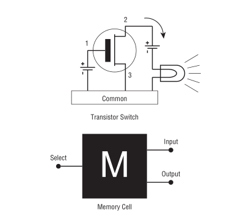
Figure 1: 内存单元
内存单元是内存能够储存的原因,也解释了为什么老是有人说计算机的世界是 0 和 1 组成的.
准确来说内存单元是场效应晶体管(field-effect transistor),目前的计算机都是使用这种元件,
本人没有专门研究果电器元件,因此没法准确说出它的工作原理,但是大概怎么工作还是有了解的:
当 1 号针脚(pin)有电压, 2 号针脚和 3 号针脚之间就会有电流(current)通过,那么灯就发亮,这个时候就表示 1;
当 1 号针脚失去了电压, 2 号针脚和 3 号针脚之间的电流就会断开,灯被熄灭,这个时候就表示 0.
在现实中,除了晶体管外,还需要半导体(diodes)和电容器(capacitors)才能组成一个完整的内存单元.
内存单元的线路是由经过重新排列的,可以看到一个内存单元有三个针脚,
当 select 和 input 两个针脚有相似的电压(电压是固定的并且不会很大,因为电压越大发热越严重,对电器元件不好),
output 针脚也会出现电压,电压会让它保持为设置状态(set state),
直到整个内存单元没有电压,或者 input 上的电压被移除.总体上来说和晶体管的工作方式差不多.
一个内存单元只能储存 1 位(bit)的数据量,当 ouput 针脚存在电压就表示1,反过来就是 0.
内存芯片
只储存一位的数据量当然是不够的,因此把多个内存单元集成在一起形成一张芯片.

Figure 2: 内存芯片
可以看到这一张芯片上有 20 个叫做地址针脚(address pins),也就是说这张芯片有 \(2^{20}\) 个内存单元.
按照顺序排列,每个内存单元都有自己的编号,从第一个到最后一个的编号排列: \(0 \to 2^{20} - 1\),
\(2^{20} - 1\) 转换为 16 进制就是 0fffff,这些编号就是所谓的内存地址.
一个地址针脚有电压,比如是5v,有电压就表示 1,没有电压就表示 0,通过这个方式表示(编码)一个二进制数字,
然后地址解码元件(address decoder circuitry)根据电压得出这个数字,这个数字就是内存单元的地址.
数据针脚(data pin)是用于传输数据的,它会在内存单元的 input 和 output 之间切换.
当内存单元的 input 被接通,这个时候内存单元就 output 输出 5v 电压,就表示这个内存单元储存的值是 1;
反过来, output 没有电压就表示这个内存单元储存的值是 0.
内存之所以叫做 RAM (random-access memory) 是因为可以在不影响(disturbing)其它内存单元下访问到任意一个内存单元上的数据.
并非所有储存都是这种工作方式,有一种储存硬件叫做 SAM (serial-access device),
比如硬盘,它有一张磁盘和一根针(磁性传感器),数据就是按照圆形排列在这张磁盘上,针就放在磁盘上,
每次读写数据时会旋转磁盘,针会在旋转到的目的位置上读写数据,如果旋转过了就等下一轮.
内存系统
一个地址一位的数据是代表不了什么的,因此后面就把多块内存芯片捆版在一起,这就是今天内存系统的雏形了.
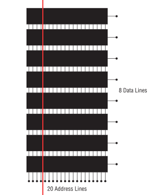
Figure 3: 内存系统
黑色长方形就是前面说过的内存芯片,它们的针脚串联在一起了,
红线表示某一个地址上,这条线通过的所有储存单元的数据就是该地址上储存的数据,
这种方式实现了一个地址上储存多位数据,比如这图就是一个地址能存 8 位,也就是今天的 1 个字节(byte).
当然今天的内存芯片早就不再是一个地址储存一位了,而是一个存多位数据, 不过主流设计仍然是一个内存地址只储存 1 个字节.
可以说这张内存能够储存 \(2^{20}\) 个字节或者 \(2^{20} \times 8\) 位.
像这种能够一次读取 8 位(1字节)数据的计算机叫做 8 位计算机 (8-bit computer).
能够一次读取 16 位(2字节)数据的计算机叫做 16 位计算机 (16-bit computer),
如此类推, 32 位计算机, 64 位计算机.
不过记住, 无论一次能够读取多少个字节,计算机也不是把它们看作一个整体来处理的,依然是逐个字节处理的,每个字节有它自己的地址.
比如 32 位计算机,一次读取 4 个字节,每个字节都有自己的编号,比如读取 0ffffe 上的 4 个字节,
那么第 1 个字节的地址可以说是 0ffffe 上的第 0 位(这里假设字节编号是从 0 开始),然后第 2 个字节是 0ffffe 上的第 1 位,
如此类推.
内存与CPU
前面只提到了内存支持读写操作,但却从没讲过完成读和写的主语是 CPU.
CPU 全称 central processing unit,是计算机的计算核心.
当用户对计算机进行输入时, CPU 就会按照定义好的规则对输入进行计算,然后把结果返回给用户,
但并非所有工作都是 CPU 孤身完成的,当有硬件更加擅长处理的任务时, CPU 会把这些工作交给它们,
自己去处理自己更加擅长的事情.
这些辅助 CPU 工作的硬件叫做外设/次要设备(peripheral),常见的有键盘,显示器,显卡(graphics boards/graphics card),外部储存.
在它们工作的时候, CPU 或多或少会对内存进行读写,也就是会频繁有数据在内存和 CPU 之间移动.
内存和 CPU 大概是这样连接的,

Figure 4: CPU和内存
CPU 给内存系统传入一个目的地址,接下来内存系统会进行其中一个行动:
- 内存系统接受来自
CPU的数据,把数据存入到目的地址上(write); - 根据目的地址在内存系统上找到对应数据,把数据运输给
CPU处理(read).
外设也有自己数据针脚和数据针脚,不过人们会把外设的地址针脚叫做 I/O 地址针脚(I/O address pin),和内存系统地址针脚来进行区分.
有些外设甚至还有内存系统,比如显卡.
在外设工作时,它们有时候会和 CPU 交换数据,有时候时外设之间交换数据,工作方式与 CPU 跟内存系统之间交换数据方式是一样的.
地址的传输时通过地址总线(address bus)来完成的,也就是上面的地址线(address lines)集合;
数据的运输都是通过数据总线(data bus)来完成的,也就是上图的数据线(data lines)集合,
不管是哪一种总线,本质上都是电线(electrical lines)集合.
CPU
CPU 实际上是一个大量晶体管集合.
少量晶体管 作为寄存器(registers),寄存器一般用于临时储存数据,但是和内存芯片上的内存单元不一样的是,
寄存器没有数字地址,它们只有只有独一无二的名字,比如 EAX, EDI.
相比在内存上读写数据, CPU 自己内部读写数据的速度更加快,这是因为速度移动减少了.
并且并非所有寄存器都是一样的,部分寄存器有着相同属性(commom properties),而部分寄存器有着其它寄存器所没有的权限(powers).
此外,大部分外设也是有自己寄存器.
大量晶体管 作为高速缓存(cache),也是用来临时储存数据的,
缓存更像内存那样拥有数字地址,相比寄存器来说距离 CPU "中心"更远一点,但是比内存更近,
也就是说从交换数据的速度来看,高速缓存没有寄存器高速,但是高于内存.
而 更大一部分晶体管 更像是一个相互连接的开关,在复杂的开关网络中与更多的开关进行连接,
这些晶体管叫做逻辑门(gates),用于逻辑运算,之后会对它们进行介绍.
程序的本质
程序本质上就是数据(data),这些所谓的数据就是字节集合,而字节本身就是由 0 和 1 组成的,这些前面都介绍过了,就不再赘述.
当执行程序的时候, CPU 就会按这份数据来做出对应的行为.
问题来了, CPU 是如何按照这份由 0 和 1 组成的数据来工作的呢?
CPU 生产商会给 CPU 定义一套编码集合(set of codes),这些编码叫做机器指令(machine instructions).
比如说 Intel IA-32 CPU 会把 01000000(40H) 定义为: 让寄存器 AX 上的数据加 1,然后把和(sum)推回寄存器 AX 上,
当 CPU 接收到 01000000(40H) 时, CPU 就会根据这个设置逻辑门的状态, 1 的时候逻辑门为 up 的状态, 0 为 down.
有些机器指令的长度不止一个字节,比如 11010110 01110011 (0B6H 073H) 就是把值 73H 加载进寄存器 DH 上.
还有一些更长的定义,不过这些都不需要记住,关健时候看 CPU 定义编码集合说明就可以.
总而言之,程序这数据就是一份机器指令清单, CPU 执行这份清单上的每一条指令.
获取和执行指令
一个运行中的计算机程序是储存在内存里面的,当32位 CPU (32-bit CPU) 开始执行指令时,
它会先从内存某个地址上获取(fetch)出程序的 4 个字节并加载进 CPU;
然后 CPU 检查这 4 个字节的位的排列模式(pattern),对照编码集合来执行任务.
对于古老的8位 CPU (8-bit cpu) 来说,每次只能获取一个字节,由于一个指令的长度可能会大于一个字节,
因此8位 CPU 必须返回到内存上读取下一个字节,直到指令完整到能够执行为止.
CPU 会在执行完一个指令后去执行下一个指令,而 CPU 有一个叫做指令指针(instruction pointer)的寄存器,它就是用来储存下一个指令的地址.
每次当前指令执行完,这个寄存器更新指向下一条指令在内存上的地址.
有一些指令可以控制对指令指针的寄存器储存的地址进行修改,这样就可以改变 CPU 执行过程,这就是一些编程语言的跳转语句宏的循环语句原理,
那么逻辑语句呢? 这则是专门有一种 1-bit CPU 寄存器叫做 flags, CPU 根据它们来判断是否执行某一组指令.
CPU 执行指令是根据按照时间来执行,计算机有一个子系统(subsystems)叫做系统时钟(system clock),本质是一个振荡器(oscillator),它会每隔一段固定时间发射出方波脉冲(square-wave pulses),
放射一次脉冲就是一个时钟周期(clock cycles).
CPU 内部的大量微型晶体管会根据时钟产生的脉冲来配合(统一)行动,这是因为 CPU 接收到命令后需要对逻辑门产生调整(改变电路),也就是需要时间来做出反应.
早期的 CPU 只能是几个时钟周期才能完成一条指令,现在的 CPU 可以并行执行指令,因此可以一个周期执行多条指令.
操作系统
本质
操作系统(operating system)本质上就是一个程序,在今天是很难看到这个本质的,因为在今天看来,操作系统和人们平时使用的程序相差甚远.
这就需要回到操作系统刚出来的那个时候了.
那个时候的操作系统只能: 从磁盘读写数据,还有就是用键盘输入字符,并且输入在显示器或者打印机上.
在 1979 年有这么一款操作系统叫做 CP/M, 这是当时桌面级操作系统的最高水平(state of the art).
CP/M 也能完成旧操作系统的工作,把处理这些工作的程序叫做 BIOS (Basic Input/Output System).
CP/M 能做得更多,当通过键盘输入程序的名字时, CP/M 就会去磁盘把程序文件加载进内存,并且把所有权限移交给加载完的程序.
比如运行 WordStar,它就会被加载进内存, 因为内存有限的原因, CP/M 会悄悄被覆盖,也就是操作系统被退出了;
每次有程序退出的时候,该程序会都会重启(reboot)计算机带回操作系统,
所以当 WordStar 退出时, CP/M 会从软盘中(floppy disk)被加载进内存,然后等用户输入程序名字,整个过程不会花费很多时间,大概两秒以下.
可以看出 CP/M 操作系统只是一个调用其它程序的程序.
关于 CP/M 的启动过程可以看 How to start with CP/M 的 What is CP/M 部分,这里就不多说了.
后来内存越来越便宜了, 在 1981 年发布了这么一个操作系统,它不再需要在启动程序时为了节省内存空间而退出了,
这个系统运行了在 IBM PC 上,这款操作系统叫做 PC DOS,它由微软开发.不比 CP/M 大太多,
而且能够做更多事情,因此 PC DOS 很快就取代了 CP/M.
时间来到了 1995 年,微软发布了一款操作系统叫做 Windows 95,这款系统有了图形界面,并且它需要运转在32位保护模式(32-bit protected mode)下,
只有 IA-32 体系结构的 CPU 才支持这种模式,在当时来说至少是英特尔的 80386 CPU 才能使用这个操作系统.
在这个模式下,操作系统和普通程序之间的地位不再平等,只要程序在运行,操作系统就不能退出.
但 Windows 95 并没有充分利用这个模式,最早充分利用这个模式的操作系统反而是 1991 年的 Linux.
Linux 的核心代码叫做内核(kernel), Linux 的设计是把内核和用户接口(user interface)完全分离.
具体是把系统内存(system memory)划分为内核空间(kernel space)和用户空间(user space),
用户空间上的程序就是今天我们在计算机上所使用的程序,这些程序不能向内核空间写入任何数据,
两个空间之间的交流需要严格通过内核提供的系统调用(system calls)来完成.
内核空间上的程序可以直接访问硬件(外设),而用户空间上的程序想访问硬件(外设)则只能通过内核模式的硬件驱动(kernel-mode device drivers)来完成.
这样可以保证恶意程序据破坏系统.
在 1993 年,微软才发布了设计上类似与 Linux 的操作系统 Windows NT 系列,
这个系列一直延续到了今天的 Windows 10. (Windows 11 也会要到来了.)
BIOS
IBM 把 BIOS 烧录(burn)到一种叫做 ROM (read-only memory) 的特殊内存芯片中,
相比 RAM 的断电丢失数据, ROM 有着在任何情况下(通电与否)都能保留数据的优势,
像 BIOS 这种被烧录到 ROM 上的软件(software)/程序叫做固件(firmware).
计算机的主板(motherboard)上会有一块储存了 BIOS 的 ROM,这样就能避免每次开机从磁盘加载数千条指令.
BIOS 是计算机启动时第一个被加载的软件,然后才能加载系统,因此 BIOS 的芯片坏了就很麻烦.
现在的 BIOS 已经比起以前的 BIOS 已经更加复杂了.
多任务
回到 1995 年的 Windows 95,它带来了以前所有操作系统所没有的抢占式多任务(preemptive multitasking).
它可以让内存上的所有程序同时运行.
可是前面了解过 CPU 执行程序的过程都清楚, CPU 是逐条执行命令的,并不能一次执行多条命令,因此这个"同时运行"是假象.
Windows 95 给内存上的每个程序一小段(slice) CPU 时间, CPU 在这一段时间内执行对应程序的数条机器指令.
整个过程可以想象成下图,

Figure 5: 多任务
CPU 就像一个旋转选择器(rotor),每次旋转指向到哪个程序上就执行哪个程序,执行数条执行后就切换到下一个程序,记录下切换时的程序执行位置,
当下一轮的旋转指向到同一个程序时,从上一次切换时记录的执行位置继续执行.
操作系统可以给程序定义优先级,优先级越高的程序,每次执行的时间就可以越多,反之越少.
这里的程序是指用户空间和内核空间的程序总和,一个成熟操作系统的结构应该是这样的.

Figure 6: 成熟的操作习系统
CPU的后续发展
在 2000 年初, 出现了一种能够使用两个 CPU 的计算机,
Windows 2000/XP/Vista/7 和 Linux 都提供对称多处理器结构(symmetric multiprocessing)机制,简称 SMP,
这种机制允许一台机器同时使用多个 CPU 芯片.这里的"对称"是指 CPU 的所有 CPU 相同.
在大部份情况下,一旦有两个 CPU 可用,操作系统会让一个 CPU 运行操作系统的代码,另外一个运行用户模式应用(user-mode applications).
随着技术的提高, Intel 和 AMD 可以把两个相同但独立的代码执行单元放在一个 CPU,
分别是 2005 年的 AMD Athlon X2 和 2006 年的 Intel Core 2 Duo, 这是历史上首次出现双核 CPU (Quad-core CPU).
在 2007 年, 4 核 CPU (Four-core CPU) 也开始普及.
内存寻址(上)
什么是内存寻址
掌握汇编语言的最重要部分是要对内存寻址有一个深入的理解(The skill of assembly language consists of a deep comprehension of memory addressing),
其它的部分都是十分容易和简单的.
所谓的内存寻址就是 CPU 定位到正确的内存地址上,有不同的定位方案,一个定位方案就是一个内存模型(memory model).
历史上 x86 架构的 CPU 有很多种内存模型,有三种模型是最近的 x86 CPU 能够用到的,其它的内存模型基本都是这三种模型的变种,
尤其是第二种的变种最多.
在 32 位 Linux 上编程,基本上就是只需要用到一种内存模型,不过我们应该把三种都学了.
这三种按照从古到今的时间顺序排列分别是: 实模式平面模型(real mode flat model), 实模式分段模型(real mode segmented model)和保护模式平面模型(protected mode flat model).
其中,"实模式平面模型"和"实模式分段模型"统一称实模式(real mode).
最老的实模式平面模型已经"退休"了,而实模式分段模型对于程序员来说都是很讨厌的, DOS 的巅峰时期就是用这种模型,
最新的保护模式平面模型需要 IA-32 架构的 CPU 支持(前面有提到过),这套模型就是现在的主流.
其中实模式平面模型和保护模式平面模型非常相似,可以把前者看作是后者的缩小版(in miniature),
如果能够掌握前者,那么掌握后者也是一件容易的事情.
Win 9x 经常奔溃极有可能是因为它有一个怪胎一样的内存模型,可能是上面三种模型中两种的结合体,
然后微软员工自己也不能理解它.
从实模式分段模型开始出发
虽然说这个模型已经退休了,但是里面一些概念对于理解其它两个模型还是很有帮助的,同时这个模型也是最复杂的.
反正三个模型都要学,那么就从实模式分段模型开始,这里会介绍两款应用了这个模型的 CPU,并且介绍这个模型的优缺点.
Intel 8080 是 8-bit CPU, 8-bit 是指 CPU 每次读取一个字节,或者说每次寻址一个字节,
它有 16 条地址线,也就是它支持的内存的针脚数量最大为 \(2^{16}\),也就是说它的寻址范围是 0 到 \(2^{16}-1\).
但是那个时候大部分的计算机只有内存基本都是 4K, 8K 个内存地址(这里的 4k 表示 4000, 8k 表示 8000),
这也意味着 CPU 有一些地址线是空闲的,它们没有连接到内存上,因此 CPU 的可寻址范围还是决定于内存.
CP/M-80 是使用 Intel 8080 最多的操作系统, CP/M-80 位于内存的顶部,这么设计的理由有两个,
一是为了方便包含在 ROM 中,二是给临时程序(transient programs)"让路",这些临时程序会在需要的时候被加载.
当 CP/M-80 从磁盘加载一个程序时,程序会被加载到 0100H (256)的位置.

Figure 7: 英特尔-8080 内存模型
内存的前 256 个字节叫做程序段前缀(program segment prefix, 简称PSP),用来储存零散的信息,
它还有一个目的: 作为通用内存缓冲区(general-purpose memory buffer),用于程序的磁盘输入/输出(IO).
可执行代码只有在操作系统对 0100H 寻址才会被运行.
这套寻址方案十分简单(simple), Intel 这么做的原因是为了方便开发者把 CP/M-80 的软件从 Intel 8080 翻译到 Intel 8086 上,
这个翻译的过程叫做移植(porting).
Intel 8086 是 x86 系列的开始,它是 16-bit CPU,
每次读取 2 个字节,有 20 条地址线,也就是可寻址范围最大是 0 到 \(2^{20}-1\),
是 Intel 8086 的 16 倍,它所使用的内存每个地址上可以储存 2 个字节.
两个 CPU 差别如此之大,又是如何实现移植的呢?
Intel 的做法是让 16 位寻址系统(16-bit addressing system)也能在 Intel 8080 上可行,
把 Intel 8086 所支持的最大内存看作 16 段 64K 的和, 就是 1M,
64K 就是 Intel 8080 所支持的最大内存,把每一段(segment)看作是一个 Intel 8080 内存系统.
Intel 8086 有一类寄存器叫做段寄存器(segment registers), 就是用来记录内存指针的,
这些内存指针指向"事情"开始的位置,可以是数据储存,代码执行或者其它东西,
其中一个是具体是某一段内存的开始位置,也就是某一个 Intel 8080 内存地系统的开始,
CP/M-80 的程序可以愉快的在 64K 区域内运行.

Figure 8: 英特尔-8086 内存模型
8086 和 8088 有 4 个段寄存器,那个指向 64K 区块的起始位置的寄存器叫做 code segement,简称 CS.
你可能有疑问,这么方便的模型为什么会令人讨厌呢?
因为在后来内存越来越便宜的年代下,程序所需要的内存已经超过 64K 了,这意味着一个程序需要几个 64K 块,
程序需要不停地从段寄存器切入和切出值,来实现在段之间进行切换,这无疑是增加了程序开发的难度.
Intel 8086 有一类寄存器叫做段寄存器(segment registers), 就是用来记录内存指针的,
这些内存指针指向"事情"开始的位置,可以是数据储存,代码执行或者其它东西,
其中一个是具体是某一段内存的开始位置,也就是某一个 Intel 8080 内存地系统的开始,
CP/M-80 的程序可以愉快的在 64K 区域内运行.
Figure 9: 英特尔-8086 内存模型
8086 和 8088 有 4 个段寄存器,那个指向 64K 区块的起始位置的寄存器叫做 code segement,简称 CS.
这个能访问到内存上的 1M 内存叫做实模式内存(read mode memory),
虽然说最大访问内存是 1M, 但 CPU 每一次只能访问 64K 字节,就像有一个挡板一样限制 CPU 只能"看到" 64K 字节.

Figure 10: 任何时候只能访问64K个字节
后来的 x86 CPU 能够支持更大的寻址范围, 比如 80386 能够支持 4G 内存,并且不对内存进行分段.
然而,还是有大部分的 DOS 是使用分段技术编写的,为了维持对古老的 8086 和 8088 进行向后兼容(backward compatibility),
新的 x86 CPU 能够将自己限制在老式 CPU 的可寻址范围内,或者说是模拟老式 CPU 的工作方式,来保证这些软件可以运行.
这就是虚拟86模式(virtual-86 mode).
段的正式介绍
前面只是简单地把段看作是内存上区域,实际上还有很多细节需要学习.
在说到实模式分段模型的时候,段就是一个内存区域,它以段落边界(paragraph boundary)的区域.
一个段落(paragraph)就是 16 个字节,和段类似,只是一个段就是 64K 个字节.

Figure 11: 内存术语
那什么是段落边界呢?所谓段落边界就是可以被 16 整除的内存地址.
按照这个定义,第一个段落边界是地址 0,第二个是地址 10H,第三个是 20H,如此类推.
这并非就是说一个段是从每 16个字节开始,一直贯穿到整 1M 的内存,当然一个段 可以 从任意一个段落边界开始.
可以给段落边界编号,这个编号就是段地址,之所以叫做段地址是因为我们是把段起始位置作为段的地址.

Figure 12: 段地址对内存地址
因此, 1M 内存有 \(2^{20} \div 16 = 65536\) 个段地址.
一个程序可能会使用 4 到 5 个段,每个段会有不同的分工,并且每个段可以在任何段地址上.
每一个段并非固定就是 64K,而是最大 64K,一个段的大小可以是 1 个字节长, 256 个字节长,只要是小于等于 64K 个字节就可以了.
也就是说到段的长度不定,那么在定义一个段时,除了指定起始位置以外还需要指定长度吗?
不需要!
首先,只要指定了段的起始位置,那该地址后面的若干个连续的字节就是段的一部分了,它"按照规定"占用 64K 个字节,
但前面讲过了,段并非都是固定 64K, 也就是说这 64K 个地址并非都会用上,这导致了空间浪费;
其次,段并非某种内存分配(memory allocation),段内储存的东西是不会受到保护的;
最后,不要忘记段可以出现在任何段地址上.
结合这三点可以得出一个事实: 段之间可以相互重叠(overlap),这样可以提高内存的使用率.
想要真正理解段,那么就需要理解它是怎么用的,不过在这之前需要明白寄存器的一些细节.
我们口中的 "n-bit CPU" 的 "n-bit" 实际上是指 CPU 的通用寄存器的有 n 位,
这也解释了为什么说 8-bit CPU 每次取 1 个字节(8 bits), 16-bit CPU 每次取 2 个字节(16 bits).
储存内存地址是寄存器最重要的工作,这个就有一个问题了,来回想一下 8086 这个有 20 个地址线的 16-bit CPU,
它是如何用一个 16 位大小的寄存器来储存一个 20 位大小的内存地址呢?答案是不能这么做,而应该是一个 20 位大小的内存地址用 2 个寄存器储存.
每个字节都是位于段内,一个字节的完整地址应该由段地址(segment address)和字节到段起始位置的距离组成,
字节到段起始位置的距离叫做偏移地址(offset address),完整的地址应该是 segment adderss:offset address,
就像街道地址一样,什么街道多少号,不过还是有点区别,那就是同一个字节可以有多种方式描述它的完整地址.
一个字节可以同时在多个段上,因此同一个字节可以有多个地址,比如,下面的 MyByte.

Figure 13: 同一个字节,不同地址
寄存器
一个 CPU 里面的寄存器是有分工的,不同寄存器负责的工作不一样,
比如前面提到的段寄存器就是专用型,只保存段地址;
有一些寄存器没有规定负责某方面的工作;
有寄存器用来记录程序执行的位置;
再有一些寄存器专门用来做逻辑判断.
我们会学习所有类型的寄存器,这是掌握汇编语言的重要环节.
和内存一样,每个寄存器都有自己的地址的,只是它们不是用数字地址,而是用名字作为地址,
而它们的名字就能够反映它们的作用.
我们从 段寄存器开始 (segment registers),段寄存器有 4 类.
在 8088, 8086 和 80286 这三个 CPU 上,每个 CPU 都只有 4 个段寄存器;
而 386 和后来的 Intel x86 CPUs 在这 4 个的基础上增加多了 2 个.
还有一点要清楚: 不管是在什么 CPU 上,段寄存器的大小都是 16 位,包括后面的 32 位 CPU.
每个段寄存器的分工也有区别,接下来看看有哪些段寄存器,以及它们分别是做什么的:
CS (code segment),表示代码段.
代码段就是储存程序的机器指令的区域,一个程序 可能 有多个代码段,这取决于内存模型.
在运行程序时,执行的指令就存在于这片区域的某个偏移位置上,
CPU需要知道当前在执行哪一个程序的哪一个代码段,所以 CS 需要记录当前指令所在段的段地址.在不同内存模型下,
CS的使用不太一样.在实模式分段模型下,
CS的值会经常被更新;在平面模式下,
CS的值永远不会在绑定程序时发生改变;在保护模式下,所有段寄存器都由操作系统安排,并不会被普通的程序改变.
DS (data segment),表示数据段.
在运行程序时,会把变量和其它数据放在某一些段上,这些段就是数据段.
一个程序可能会有多个数据段,但
CPU一次只能使用一个,所以 DS 需要记录当前数据段的段地址.SS (stack segment),表示堆栈段(我不知道为啥翻译成堆栈,明明就是只有
stack没有heap).每个程序只有一个堆栈段,这个段是用来 临时 储存数据和内存地址的.
堆栈段的行为与名为栈的数据结构的一样,或者说它就是一个栈.
弹匣就是栈的一个实例,填充子弹需要从弹匣口推入(push),从里面取出子弹是从弹匣口弹出(pop),
哪个子弹最后推入,那么从弹匣取子弹时,它就是第一个弹出,俗称 LIFO (last in first out),最后装的子弹永远在最上面.
推入和弹出就是弹匣支持的的两个操作,在栈里面叫做进栈(PUSH)和出栈(POP).
我们把入口叫做栈顶(top of the stack,简称 TOS),也就是弹匣口,弹夹的底部叫做栈底(bottom of the stack).
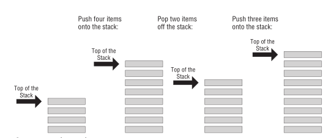
Figure 14: 栈
不过
x86栈是栈顶位的内存地址比栈顶(bottom of the stack)内存地址低,也就是把上面的图倒过来.SP寄存器储存指向的永远是栈顶位置,也就是最新进栈"物品"在堆栈段上的地址.那么它和同样储存数据的数据段有什么区别呢?可以这么理解,
数据段上的数据是在程序文件里面就已经声明和定义好的,
而堆栈段上的数据是在程序运行时产生的,这些数据可能会在运行到某一个阶段时消失.
目前只要理解到这样就可以了,关于堆栈段的说明不是两三句就能描述清楚的,后面会做也写补充.
ES (extra segment),表示附加段.
附加段就是一个用来储存内存地址的附加段.
FS 和 GS,这两个段都是附加段,它们的名字就是表示它们是创建在 ES 之后(E,F,G).
这两个段是只有
386以及后来的x86 CPU才有的.
接下来是 通用寄存器 (general-purpose registers),
通用寄存器并不像段寄存器那样专门专注某一项工作,虽然说在实模式下也能够强迫段寄存器完成储存段地址以外的工作,
但是大部分的一般工作都是由通用寄存器来完成的,比如保存偏移地址来配合段地址标注字节地址;保存计算用的数值;位偏移操作(bit-shifting),算术运算以及其他各种事情.
通用寄存器的任意一个都可以完成上面这些工作,但是不同的汇编编译器/汇编语言会有自己的用途规范,规定某个通用寄存器用来做某件事情,
这一点需要记住.
16-bit CPU 和 32-bit CPU 的最大区别在于通用寄存器的大小不一样, n-bit 指的就是通用寄存器的大小.
虽然说通用寄存器都是完成一般型任务,但是存在一些通用寄存器,有一些只有它们才能处理的工作,这些工作实际上是老 16-bit CPU 的限制,
对于新的 32-bit CPU 来说也是一般型任务.
在 32-bit CPU 里面,通用寄存器分为三大类: 16-bit 通用寄存器, 32-bit 通用寄存器和 8-bit 寄存器.
不过并不是说一个 32-bit CPU 有着三个不同且独立的寄存器集合, 8-bit 寄存器和 16-bit 寄存器只是 32-bit 寄存器上区域的名字.
可以这么理解,新 CPU 只是在旧 CPU 的寄存器基础上进行拓展.
有 8 个 16-bit 通用寄存器: AX, BX, CX, DX, BP, SI, DI 和 SP, SP 比起其他通用寄存器没那么通用.
这些寄存器原本是出现在 8086, 8088 和 80286 上面的,可以把能 16 位或小于 16 位的数据存放在上面.
在 1986 年, Intel 把寄存器的大小拓展到 32 位,并且给了它们新的名字: EAX, EBX, ECX, EDX, EBP, ESI, EDI 和 ESP.
像下面的 SI, DI, BP 和 SP,在定义寄存器的同时不抛弃老的寄存器.
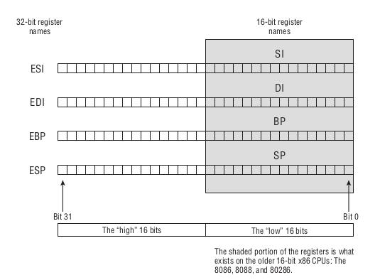
Figure 15: 32位寄存器
因为寄存器的名字就是地址,因此只要通过旧寄存器名字就可以访问到低 16 位,
另外 4 个通用寄存器 EAX, EBX, ECX 和 EDX 也是这样的,
但是这 4 个比较特殊,因为 AX, BX, CX 和 DX 自己本身也会均分成两半,均分的两半也是有自己的名字的.
那么是怎么表示呢?其实很简单,我们把高 8 位用 H 表示,低 8 位用 L 表示,
举个例子,访问 AX 的高 8 位就是 AH, 低 8 位就是 AL.

Figure 16: 8位,16位和32位寄存器
下一个是 指令指针寄存器 (instruction pointer),通常叫做 IP,
在 16-bit CPU 里面它的大小为16位,在 32-bit 保护模式下叫做 EIP,大小为32位.
它自己就是一个类型的寄存器,它真的只能做一件事情: 储存当前代码段里面下一个要被执行指令的偏移地址.
当执行一个程序时, CPU 会使用 IP 来跟踪当前代码段中的位置,也就是程序当前执行的位置.
每次执行一条指令后, IP 就会增加一定的字节大小,这个大小就是刚才执行的指令大小,这样 IP 就能够指向下一个指令的起始位置了.
每条指令大小都不一样,通常是 1 到 6 个字节,有一些神秘指令的大小更大.
在实模式分段模型下, CS 和 IP 能够补全一个20位大小的指令地址;
在平面模式下, CS 是被操作系统控制的, IP 独自指向指令地址;
比如在 16-bit 平面模式下, IP 可以在指向 64K 个内存地址的任意一个;
而在 32-bit 平面模式下(也就是保护模式平面模型), IP 拓展为 EIP, EIP 可以指向 4G 个内存地址的任意一个.
IP 是唯一一个不可 直接 读取和写入的寄存器,虽然有一些方法是可以获取到 IP 的值,
但是这个值的使用价值没有那么大.
最后一个就是 标志寄存器 (flags registers) 了.
在 16-bit CPU 下它的大小为16位,名字叫做 FLAGS;在 32-bit CPU 下它拓展位为32位,名字叫做 EFLAGS.
寄存器里面的大部分位(bits)都是作为"1位"寄存器来使用的,这些"1位"寄存器都有自己的名字,比如 CF, DF, OF 等等.
当程序在执行测试时,它所测试的是标志寄存器上中的某1个位,并非整一个寄存器,每个位的值只有两种可能: 1 或 0.
所以对于汇编语言来说,一个测试就是一次2选1.
当然,程序一般都会根据若干个"1位"寄存器上的值来进行决定下一步的行动,这样选择结果就不止2种了.
内存寻址(下)
三个内存模型的主要区别在于寄存器的使用上,下面会直观地介绍它们的区别.
实模式平面模型
实模式平面模型只能访问 1M 个内存地址,程序和它的数据 只能 存在于一个 64K 区域内,这意味着程序能做的事情十分有限.

Figure 17: CP/M-80与实模式平面模型
因为 16-bit 寄存器可以储存从 0 到 65535 的任意值,比如 BX,
也就是说它可以定位到程序内存区域的任意一个地址,可以不需要使用段寄存器来进行定位.
在这个模式下段寄存器就由操作系统来把握,在运行程序的时候操作系统会自己设置它的值,程序员不需要和段寄存器打交道.
实模式分段模型
前面就已经讨论过实模式分段模型的一些概念了,这里就不多说什么了.
不过还是提一句,段地址并非真的内存地址,它就是一个概念,
它因为一个 16-bit 寄存器无法储存一个 20-bit 内存地址才存在的,
目的就是让 CPU 通过它和偏移地址计算出真正的内存地址: \(segAddr \times paragraph + offsetAddr\).

Figure 18: DOS与实模式分段模型
可以看到这个程序有两个代码段,但是 CS 寄存器只有一个,它必须要指向当前代码段.
这意味着需要在两个代码段之间进行跳转,不过并非让程序员直接改变 CS 的值,
而是调用一个叫做 jumps 的指令来完成这项工作,实现代码段之间跳转.
有一件事情要记住心上,在实模式下,会有操作系统的"碎片"和程序一起混合存储在内存上,
如果 CPU 是 8086 和 8088 的话就没有这个问题,否者开发人员需要小心不要破坏系统内存.
这是十分危险的,因此 Intel 想办法给系统的内存提供保护,避免应用程序以外对系统照成伤害,
应用程序是指操作系统和驱动以外的程序.
最早出现这个特性的 CPU 是 1986 年的 32-bit CPU 80386,这就是保护模式的由来.
保护模式平面模型
应用程序自身是无法利用保护模式的,在运行应用程序前,必须要先由操作系统建立和管理一个保护模式.
微软也是在 1994 年的 Windows NT 上才使用上保护模式;而 Linux 在 1992 年面世以来就使用的保护模式.
Windows 的应用程序本质上(in nature)并不需要图形化,在 Windows 下编写保护模式程序最简单的方法是创建控制台程序(console applications),
运行在一个叫做控制台/终端(console)的文本模式程序(text-mode programs)中.
控制台程序使用的就是保护模式平面模型.
而 Linux 的默认模式就是文本控制台(text console),所以 Linux 创建保护模式的程序更加简单.
两者的内存模型十分接近.
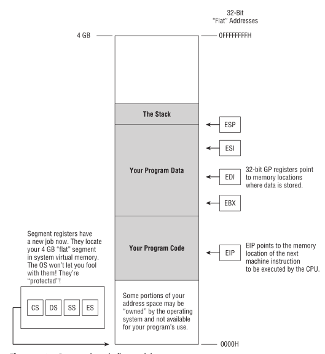
Figure 19: 保护模式平面模型
在保护模式平面模型中,段寄存器依然存在,但是已经完全被操作系统接管了,已经是操作系统的一部分了,
基本上不能对它们进行读写了,并且它们的工作也发生了改变: 定义你的 4GB 内存空间出现在物理内存和虚拟内存的何处.
所谓虚拟内存就是把内存空间临时映射到硬盘上,把硬盘当作内存来使用,这是操作系统管理内存的技术,比如 Linux 的 Swap.
80386 是首个 32-bit CPU, 32-bit 寄存器意味着它能够储存 0 到 \(2^{32}-1\) 内存地址中的任意一个.
如果计算机超过 4G 内存,操作系统给出一块 4GB 大小的连续内存区域,所有程序都会被限制在这块区域上;
如果计算机只有 4G 内存,操作系统就会使用虚拟内存获得一块完整的 4GB 内存空间.
定义这块内存所处位置的工作就分摊到每个寄存器上了.
这 4G 内存有一部分是给操作系统准备的,剩下的都是是应用程序的,操作系统的内存是被保护起来的,不能使用也不能看,
一但应用程序试图访问这些内存,就会触发运行时错误(runtime error).
在实模式平面模型下,程序拥有操作系统"转手"的 64K 内存的使用权;此外就是段寄存器可以被程序员操作,以及通用寄存器能够储存的地址范围比较小.
64-bit CPU
Assembly Language Step-by-Step: Programming with Linux 3rd Edition 这本书写的时候是处于 32-bit CPU 主流的时代,
书本教学使用的是 32-bit CPU,不过作者已经说过若干年之后就是 64-bit CPU 的时代,而我现在就处于这个时代.
这就意味着按照书本上的内容可能会对照不上,因此我特意去查了一下 64-bit CPU 所支持的内存模型: 长模式(long mode flat model).
发现它能够兼容保护模式的程序,对一些旧的 32-bit 寄存器进行拓展以及新增加了一些寄存器等等,具体可以看这里: x86-64.
也就是我们先可以按照书本上来学,基本上是可以对得上,后面学习长模式.
使用汇编语言开发的流程(上)
编程本质上就是一种处理文件的方式,使用一个或多个的人类可读(human-readable)文本文件,根据它们进行处理来得到一个可执行程序文件,这个文件可以在当前系统下运行.
根据文本文件转换出二进制文件(binary files)的这个过程叫做翻译(translation),完成这项工作的程序叫做翻译器(translator),
输出的二进制文件可以是可执行程序,也可以是其它类型的二进制文件.作为输入的文本文件叫做源文件(source files).
有一种翻译器是专门生成可执行程序,叫做程序翻译器(program translator),这个时候源文件叫做源代码文件(source code files),
生成的二进制文件叫做目标代码文件(object code file).
程序翻译器也是有分类的,这是按根据代码文件所使用语言类型来进行划分的.
当源代码文件都是使用 C 这样的高级语言编写的,那么这种程序翻译器叫做编译器(compiler), GCC 就是一个例子;
如果源代码文件使用的是汇编语言(assembly language),那么这种程序翻译器叫做 汇编编译器 (assembler), NASM 就是一个例子,同时也是这本书的教学例子.
我们称呼"汇编翻译器把汇编语言翻译成目标代码"的这个动作为汇编(assembling).
基本上大部分编译器都是先把高级语言翻译成汇编语言源代文件,然后汇编编译器把它翻译成到目标代码,
这就决定了汇编语言比高级语言有更高的控制权,因为编译器会把每条高级语言的语句生成规定数量的汇编语言语句,
有些生成的汇编语句在某些情况下是"多余的",而程序员无法改变这种情况,除非直接优化生成的汇编语言源文件.
有些编译器会实现一个叫做内联汇编(in-line assembly)的功能,来让程序员重新获得这种控制权.
汇编语言 (assembly language)
很多人认为汇编编译器能够把源代码文件的一行翻译成一个机器指令,这是 不对 的.
源代码文件的代码行只是告诉汇编器的怎么生成机器指令而已,也就是汇编器的指令,并非对应 CPU 的指令,它们不会翻译成任何机器指令.
也就是说,汇编语言是一种能够控制程序翻译器生成机器指令的语言,不同汇编编译器所使用的汇编语言都不一样.
汇编语言的语法分两大类: AT&T 和 Intel,这两个语法只是一个抽象的规范,并不是具体定义.
接下来要学习的 NASM 使用的就是 Intel 语法,而它的其中一个竞争对手 MASM 也是使用 Intel 语法,
虽然使用同一种语法,但是两者支持的指令是不一样的,也就是 NASM 能够汇编的代码不能够被 MASM 汇编,反过来也一样.
这是因为它们的对语法的具体实现是不一样的.
每个 CPU 的大部分机器指令在汇编语言里面都会有对应的助记符,比如机器指令 9CH 的作用是把标记寄存器(the flag register)压进栈里面,它对应的是 PUSHF, PUSHF 就比 9CH 更容易记忆;
再比如,
mov eax, 4 ; 04H specifies the sys_write kernel call mov ebx, 1 ; 01H specifies stdout mov ecx, Message ; Load starting address of display string into ECX mov edx, MessageLength ; Load the number of chars to display into EDX int 80H ; Make the kernel call
助记符 MOV 需要接收两个操作数(operands),一个助记符加上它的操作数就是一个指令(instruction),
有时候会把助记符叫做操作码(operation code,简称opcode).
(这里的指令是指人类可读的汇编翻译器指令,并非指二进制的机器指令,如果后面没有特殊说明,也是这么规定),
还有些助记符是不接受操作数的,比如前面的 PUSHF.
汇编编译器最重要的工作就是从源代码文件读取代码行,然后把对应的机器指令写入目标代码文件中.

Figure 20: 汇编编译器的工作
指令右边的以";"开头一直到行尾为止的文本叫做注释(comment),它的用户就是标注这一条指令的意图是什么.
在任何时候编程都需要考虑代码可读性,不要几个月后回来阅读编写的代码就不知道它们是怎么设计的,这就是传说中的"只写"(write-only)代码.
高级语言可以通过给变量/函数取符合它们作用的名字等方式来告诉读者变量/函数是做什么的,必要时候哈可以使用注释帮助说明.
然而汇编语言不像高级语言,它只能使用注释来告诉读者指令的意图,所以使用汇编语言编程要习惯用注释,
况且注释只会添加源文件的大小,并不会被复制进目标代码文件里面.
目标代码和连接器
现代的汇编编译器生成目标文件并非就可执行程序,而是源代码和可执行程序之间的一个中间步骤(intermediate step),
这个中间步骤的目标代码文件叫做目标模块(object module),它们不能像程序一样可执行,
还需要多一个叫做连接(linking)的步骤,完成这个工作的程序叫做连接器(linker),它的作用是把所有目标模块文件变成一个可执行程序.
这么做的原因是为了能够把大源代码文件拆分成多个更加小的源代码文件,保持文件大小以及复杂度的可管理性.
因此创建可执行程序的整个过程是这样的:
汇编编译器对每个源代码文件进行汇编,然后把所有目标代码文件进行连接为一个可执行程序.
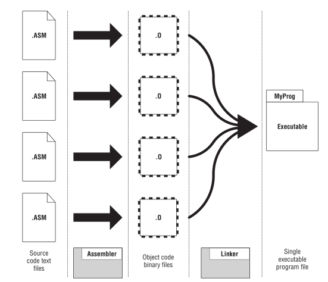
Figure 21: 汇编编译器和连接器
但这并不意味着只有一个源代码文件的情况下就不需要连接器,连接器并非只是单纯地把东西块连接起来,
它保证了目标模块外的函数调用能够正确到达对应的目标模块,以及所有内存引用能够正确引用到该引用的地方,
而且这些保证都是必要的.
一个目标模块可能包含以下信息:
- 程序代码,包括已命名的过程(named procedures);
- 对模块外的已命名过程的引用(references);
- 预先赋了值(比如数字和字符串)的已命名数据(named data)对象;
- 没有赋值的已命名数据,相当于空白空间,等程序员后学使用;
- 对模块外数据对象的引用;
- 调试信息(debugging information);
- 一些用来帮助连接器创建可执行程序的杂项(odds and ends);
我们把这些已命名项(item)的名字叫做符号(symbol).
为了把多个目标模块连接成一个可执行程序,连接器需要先建立一个叫做符号表(symbol table)的索引,
这个索引记录了它连接的每一个目标模块中的每个符号,以及哪个符号指向哪个模块内部的哪个位置.
然后连接器建立一个映像(image),它就是程序被加载到内存后的模样.
建立完毕后,它会被写入到硬盘/磁盘里面成为可执行程序,当操作系统运行它的时候,程序就会按照映像的那样被加载进内存.
在建立映像中,最重要的一件事情是连接器使用 相对地址 来进行引用.
目标模块允许引用其它模块的符号(symbol),这种引用叫做外部引用(external references).
这些引用就像洞一样,可以在后续被填补上,这些符号所处的模块还没有被编译,甚至还没被编写.
连接器在生成映像的时候,它知道符号在映像中的位置,它知道在什么地方放入真实地址.
还有就是调试信息,先解释一下什么是调试(debugging),
所谓调试就是程序员定位发生错误的地方,以及修正错误.
调试信息就是帮助程序员完成调试工作的信息,它是可选的,
在进行汇编编译时可以把部分源代码嵌入到可执行程序里面,这部分源代码就是调试信息,
这样程序员在调试的时候就能够看到数据项(data items)的名字.
程序员要使用一个叫做调试器(debugger)的工具完成调试,这要求调试的程序必须包含了调试信息.
程序每秒都会执行成千上百条机器指令,调试器允许开发人员控制程序的运行进度,一个时间内执行一条指令,观察一条指令的效果.
可重定位性
早期的计算机系统规定所有程序运行时要被加载到一个特定的内存地址,像 CP/M-80,这个地址是 100H,
每次程序运行的时候,程序的数据会被加载到同一个地方,每次运行都在这个地址上访问数据,这样才能正确引用到数据.
后来在 8086 以及针对 8086 的操作系统的出现改变了这一切,程序不需要每次都加载到一个固定地址上,
当然程序的数据也不是加载在一个固定地址上,那么又是如何每次运行程序都能正确引用到数据呢?
数据每次都会被加载到相对程序起始位置固定的偏移地址上,比如程序被加载到 02C0H 上,
某一个数据是相对于程序起始位置偏移 0010H 个地址,也就是说数据的地址是 02D0H;
假设下一次运行时,程序被加载到了 03D0H 上,那么数据地址就是 03E0H,
要每次都能正确引用到这个数据,那么只要保持数据的偏移地址不变,每次通过偏移地址引用数据就可以了.
这个特性叫做可重定位性(relocatability),是现代计算机系统必要部分,处理可重定位性可能占据了连接器的工作的一大部分.
动态连接库具备这种特性,后面会稍微提一下.
使用汇编语言开发的流程(下)
整个开发流程大概就是这样,
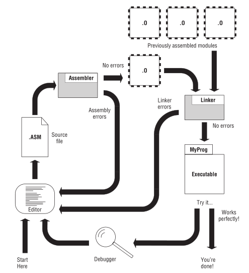
Figure 22: 使用汇编语言进行开发的流程
这里需要明白几个概念: 错误(errors), bugs 以及警告(warnings).
在上图可以看到有汇编编译器错误(assembler errors)和连接器错误(linker errors),
它们都是在生成可执行程序的过程中发生的,导致程序生成的中断,这就是第一个概念错误.
Bugs 是指 在程序运行时 发生的问题,程序没有按照程序员原本的意图来执行,
如果是做了操作系统所禁止的事情,操作系统会发出错误信息以及作出处理,这种错误叫做运行时错误(runtime errors),也是错误的一种,
和前面的汇编编译器错误和连接器错误不一样的是,汇编编译器错误和连接器错误分别是由汇编编译器和连接器发出的.
警告是在汇编过程中汇编编译器发出的,告诉程序员源代码里面有些地方有潜在风险,并不会造成目标模块生成中断,
不过 可能 会造成一些 bugs,总得来说还是需要关注被警告的地方.
说了一大堆,最后还是需要实际操作一遍来找感觉.
让我们来实践书上给出的例子,不过我改变了一些工具上选择.
首先我们是运行在 64-bit CPU 的 x64 Linux 操作系统上进行实践的,汇编编译器使用的是 NASM,连接器使用的是 ld,
书本上使用 kdbg 作为调试器,它是 gdb 的前端, gdb 是 Linux 内置的,因此我选择直接使用 gdb.
先 准备好源代码文件 (这里我们直接从书上获取源代码,顺便做了一些注释上的修改):
; Executable name : EATSYSCALL ; Version : 1.0 ; Created date : 1/7/2009 ; Last update : 1/7/2009 ; Author : Jeff Duntemann ; Description : A simple assembly app for Linux, using NASM 2.05, ; demonstrating the use of Linux INT 80H syscalls ; to display text. ; Build using these commands: ; nasm -f elf -g -F stabs eatsyscall.asm (this is for 32-bit CPU) ; or ; nasm -f elf64 -g -F stabs eatsyscall.asm (this is for 64-bit CPU) ; ld -o eatsyscall eatsyscall.o SECTION .data ; Section containing initialized data EatMsg: db "Eat at Joe’s!", 10 EatLen: equ $-EatMsg SECTION .bss ; Section containing unintialized data SECTION .text ; Section containing code global _start ; Linker (ld) needs this to find the entry point! ; The name of entry point MUST be _start! ; otherwise error will be raised during linking _start: ; A function definition, named _start nop ; This no-op keeps gdb happy (see text) mov eax, 4 ; Specify sys_write syscall mov ebx, 1 ; Specify File Descriptor 1: Standard Output mov ecx, EatMsg ; Pass offset of the message mov edx, EatLen ; Pass the length of the message int 80H ; Make syscall to output the text to stdout mov eax, 1 ; Specify Exit syscall mov ebx, 0 ; Return a code of zero int 80H ; Make syscall to termninate the program
可以看到这个文件的几个 SECTION 的作用分别有点对应前面提到过的一些概念:
.data 和 .bss 对应数据段,
其中, .data 包含了已经初始化的数据(initialized data),初始化数据是指在程序运行前就有值的数据,
这些值是可执行文件的一部分,因此 .data 会影响可执行文件的大小.
来看一下 .data 部分的代码, \(EatMsg\) 和 \(EatLen\) 就是初始化数据的变量,这里还可以把 ":" 去掉,除去一些特殊情况外,两种定义方式都是一样的.
DB 指令是 "Define Byte" 的缩写,作用是预留一字节的空间, 还有其它预留各种大小的指令: DD ("Define Double"), DW ("Define Word") 等等.
这两个变量中的 \(EatMsg\) 是一个字符串(string)变量,可以看到只预留了一个字节的空间来储存字符串,
一般按理来说,一个字节怎么可能储存得了任意长度的字符串呢?
实际上字符串是这么储存的: 用一个字节储存字符串中第一个字符的内存地址,汇编器根据字符串长度预留空间,
在访问字符串内容时,就是从第一个字符的内存地址开始根据字符串长度读取.
可以看到 \(EatMsg\) 在定义字符串的时候有用到逗号,这其实是把两个字符串拼接起来,其中数字 10 在 Linux 的文本处理中代表 EOL (End of Line).
NASM 的字符串需要用单引号(')或者双引号(")进行"包裹",如果要让字符串显示单引号,那么就要用双引号包裹字符串;如果要让字符串显示双引号,那么就要用单引号包裹.
至于 \(EatLen\) 的定义,重点在于 EQU 指令和 $.
先来 $,它后面跟着标签,而标签是地址,它的作用是告诉汇编器在汇编时(assembly-time)使用字符串的结尾地址减去起始地址得到字符串长度,这个例子的结果是 14.
这个叫做汇编时计算(assembly-time calculation),这是一个挺深的话题,需要自己去深入学习.
EQU 全称 "equate",它把标签和值关联起来,我们把这种标签称为 equate,
在汇编时,汇编器把遇到的 equate 替换成它对应的值,比如这个例子中,汇编器会以 mov edx 14 的方式对 mov edx EatLen 进行汇编.
严格来说, \(EatLen\) 其实是一个常量.
而 .bss 是包含未初始化的数据(uninitialized data), .bss 里面定义的每个数据都是一个缓冲区(buffer),
需要给这个缓冲区设定一定的空间大小,用来在之后储存值.和 .data 不同的是, .bss 不会对可执行文件的大小产生太大的影响.
一个 16000 字节大小的缓冲区基本就不怎么影响可执行文件大小,大概就相对于 50 个字节,这 50 个字节是用来记录缓冲区的名字以及分配大小相关信息.
当程序被加载时,会根据这相关信息为 .bss 里面的数据分配内存空间.
.text 对应代码段, NASM 必须定义一个 _start 标签,并且通过 global 指令把 _start 标签指定为程序入口.
这段代码只做了两件事情,做了两次系统调用,先后分别是: sys_write 和 sys_exit.
你可能在想,这到底是如何看出来使用了两次系统调用?
首先你要明白什么是函数调用(function calls),什么是系统调用(system calls).
以 C 语言为例, sys_write 就是一个函数(function),
函数还有别叫法: subroutine, procedure, method, routine,
一个函数就是一个过程: 要怎么样怎么样处理,执行这个过程就叫做调用(calling),一般来说调用某函数(call the function).
什么是系统调用呢?本质上属于函数调用,只是这个函数就是系统定义的,用来给应用程序提供有限的硬件资源访问能力.
我们例子中的这个 sys_write 就是系统调用.
一个函数可能提供参数(arguments/parameters),比如 sys_write 的调用方式是这样定义的:
sys_write(unsigned int fd, const char *buf, site_t len)
需要三个参数,那么在 nasm 里面调用它就是:
要把调用函数的函数码(function code/function number)记录在 eax 里面,把参数按照顺序依次存放在 ebx, ecx 和 edx 三个寄存器里面,
(在 unistd.h 可以查看对应的函数码,这个文件在不同发行版 Linux 上的位置不一样,
通过这命令可以定位到大概的具体路径: locate asm/unistd.h,比如在我的 Ubuntu 20.10 上是 /usr/include/x86_64-linux/asm/unistd.h)

Figure 23: 系统调用和寄存器
然后使用 int 0x80 指令来进行调用,调用返回的值会存放到 eax 上,这样就是第一次调用了.
不同架构,不同操作系统上的系统调用的调用规范(calling conventions)是不一样的,
调用规范规定了要用哪个寄存器储存函数码,哪个寄存器储存哪个参数,哪个寄存器储存返回值,
那么我们又是如何知道使用规范呢?
在 Linux 上可以在命令 man 2 syscall 的 Architecture calling conventions 进行查看,
就这个例子而言,这个程序是针对 i386 架构的 Linux,

Figure 24: man 2 syscall caller
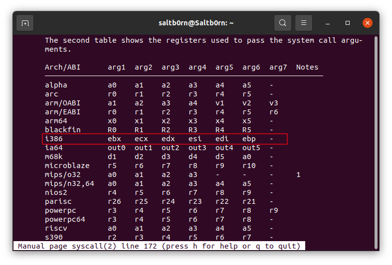
Figure 25: man 2 syscall args
你看这是不是很符合前面的说明.
第二个系统调用 sys_exit 也是一样的,因此生成的程序应该就是打印一句话 "Eat at Joe’s" 然后退出,
每个程序都必须有一个 sys_exit 的系统调用来结束程序,否则会出现 Segementation fault 的错误.
代码准备好后就可以开始 进行汇编:
nasm -f elf64 -g -F stabs eatsyscall.asm
如果没有出错的话就会生成一个 eatsyscall.o 的目标文件,出错了的话请检查源代码文件进行修正再重新汇编.
如果对 eatsyscall.o 的名字不满意,想要别的名字,比如 eatdemo.o,可以这样做,
nasm -f elf64 -g -F stabs eatsyscall.asm -o eatdemo.o
这里需要注意 nasm 几个参数.
由于我们使用的是 64-bit CPU,因此编译时候需告诉 nasm 要生成 64-bit 的目标模块,
把 -f 参数设定为 elf64 就是编译成 64-bit 的 elf 文件, elf 是一种可执行文件格式,不同的可执行文件格式会导致变汇编方式不一样,也导致了编码方式不一样,具体可以看 NASM 的官方文档.
-g 是说要生成调试信息,但调试信息的格式有很多种,所以还需要通过 -F 参数选择格式,这里选择 STABS,也就是设置为 "stabs".
如果对上面的源代码文件的指令有不理解和对 NASM 的使用有疑问,可以看 NASM 的官方文档(把它收藏起来,以后会需要经常翻阅).
最后对目标模块进行 进行连接:
ld -o eatsyscall eatsyscall.o
没有出现错误的情况下就会生成一个叫做 eatsyscall 的文件.
如果在前面汇编时没有把 nasm 的 -f 参数设置为和目前架构一样的话,那么你会遇到你人生的第一个连接错误:
ld: i386 architecture of input file `eatsyscall.o' is incompatible with i386:x86-64 output.
这个时候就需要设置好 -f 参数重新汇编.
有时候可能需要频繁修改代码,为了简化每次地的汇编和连接过程,可以使用 make 命令,它要求开发人员会编写一点点 Makefile 文件.
在和源代码文件的目录下,新建一个叫做 Makefile 的文件,内容如下,
eatsyscall: eatsyscall.o ld -o eatsyscall eatsyscall.o eatsyscall.o: eatdemo.asm nasm -f elf64 -g -F stabs eatsyscall.asm
这个是一个十分简单的 Makefile, 里面有两条规则,每一条规则的格式如下:
TARGET: PREREQUISITES...
COMMAND
TARGET 是要生成的目标文件, PREREQUISITES... 是一个依赖文件列表,就是说生成目标文件需要什么文件,
当满足依赖文件要求时,就会执行规则里面的命令.
Makefile 编写完后可以执行 make 命令来执行 Makefile 的规则.
一旦文件多了,依赖复杂了, Makefile 可以很大程度的简化开发者汇编和连接的工作流程,
Makefile 不仅仅只是用于某一门语言,或者说并不一定限于汇编/编译,很多流程处理类的工作都可以通过 Makefile 来完成.
Makefile 还有很多高级用法,具体可以阅读 GNU make 的 Writing Makefiles 部分.
到目前为止,程序已经生成完毕了,那么按照一般情况就是看程序有没有 bugs 了.
./eatsyscall
这个程序就是一个"Hello, world",正常来说是不可能有 bugs 的.
但是复杂一点的程序就不好说了,所以我们要学会如何检查程序的运行,就用这个"Hello, world"来作为学习 调试 的例子.
gdb eatsyscall

Figure 26: 初次进入调试
调试的思路是这样的:
先设置好在某个地方暂停下来,启动程序,让程序在计划的地方暂停下来,再逐步执行指令,观察指令的效果.
gdb 的命令很多,不过不需要都用上,我就针对上面的思路介绍一下命令.
开始学习一个新工具的第一件事情就是准备好工具的说明书在身边,在后续的学习还要学会如何使用说明书.
这对 gdb 也是一样的,命令很多,再好的教程也不可能覆盖完,所有没有讲到的命令都是需要学习的人自己研究.
说明书就是这么用的.
gdb 的说明书已经内置在它自己里面了: help.

Figure 27: gdb help
可以看到 gdb 的命令分成了几个大类,对应上面的思路我们需要用到其中的6个: data, files, breakpoints, stack, running 和 status 类.
接下来一边调试一边学习吧.
可以通过 files 类的 list 命令可以看到源代码的一部分,之后可以通过"回车"来往下滚动看剩余的部分.
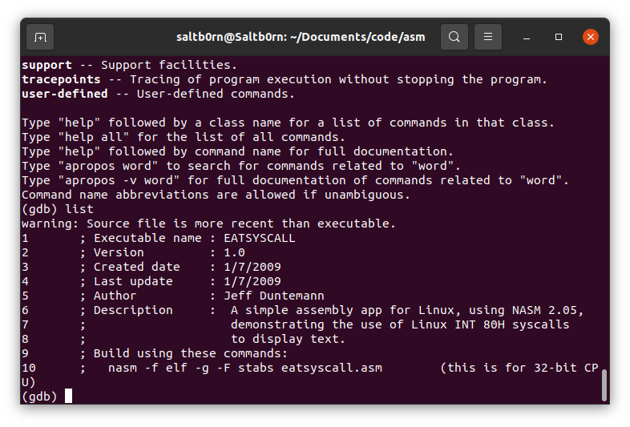
Figure 28: gdb list
当固定到最后一行时,再回车或者使用 list 命令就会类似这样的提示:
Line number 34 out of range; eatsyscall.asm has 33 lines.
这个时候想重新看之前的内容需要 list N 来翻到第 N 行.
接下来就是设置暂停的地方了,这一步叫做设置断点,我们看源代码的目的就是为了看可以在哪里设置断点.
因为这个程序十分简单,所以我们计划在程序起点进行暂停,也就是 _start 那一行,

Figure 29: 找到需要暂停的位置
使用 breakpoints 类的 break 命令指定在某个地方设置断点,指定的方式有很多,
一般来说源代码行号比较直观,就用这个作为示范: break 25;
不过,指定程序入口通常用内存地址更加方便: break *_start.
断点可以设置多个,可以让断点在特定条件下生效,具体用法就自己去查使用说明了.
这里我们这里只要设置一个就好,如果想浏览自己设置的断点,
用 status 类的 info breakpoints 命令查看,还有如果想删除断点可以使用 delete 命令.
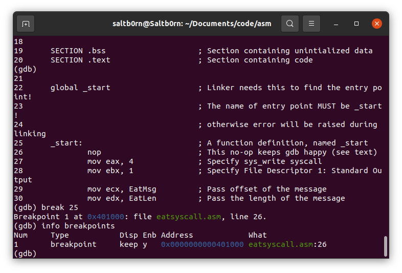
Figure 30: 设置断点
现在可以开始使用 running 类的 run 命令启动程序,它就会在我们的断点暂停下来.
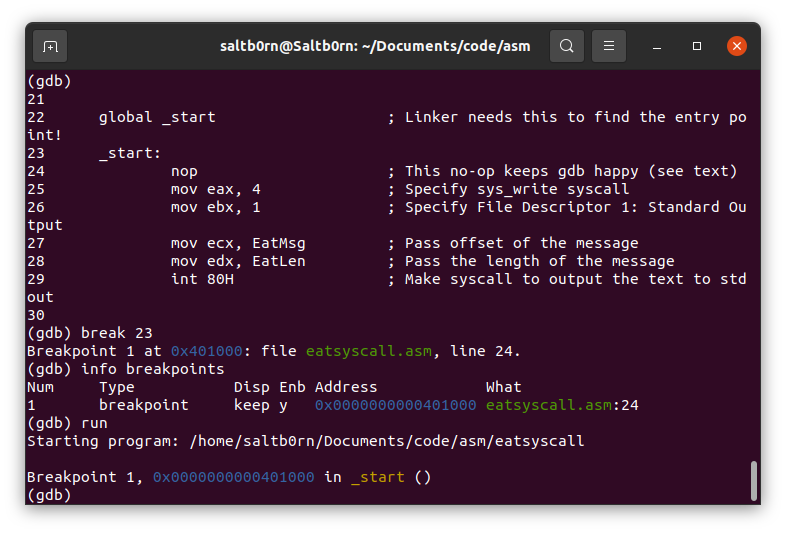
Figure 31: gdb run
接下来开始就是控制运行了,如果你想知道当前运行到哪里了,
可以用 stack 类的 backstrace 命令查看,这个命令有一个别名 where.
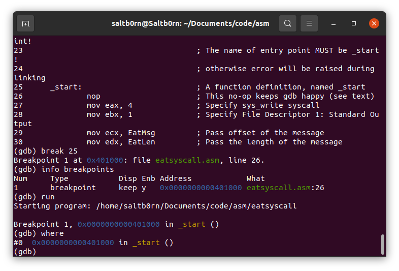
Figure 32: gdb where
当然这只能看到目前运行在哪个内存地址上,如果想要看运行到哪个指令上,
可以使用 disassemble 命令得到汇编码,它还会指向当前执行的指令,
不过 gdb 默认使用 AT&T 语法,需要自行切换到 Intel 语法.
控制汇编程序运行的常用手段有: continue, stepi, reverse-stepi, nexti, reverse-nexti 和 finish.
continue 是指从暂停的地方继续执行,直到遇到下一个断点或直到程序结束;
stepi [N] 全称 step instructions,作用时指执行 N 条指令,缺了参数 N 就表示执行1条,
如果执行的指令是一个函数调用,那么它就会进入到函数的内部调试,要逐步执行完函数内部的指令,或者直接使用 finish 才能跳出来;
nexti [N] 全称 next instruction,作用是执行 N 条指令,和 stepi 不同的是它不会进入函数内部调试,
完全把函数调用的指令当做真正的一条指令,同样缺了参数 N 表示执行1条.
最后 reverse-stepi [N] 和 reverse-nexti [N] 都是后退执行,
想要使用这两个命令需要(最好)先在遇到第一个断点后使用 running 类的 target record-full 命令来记录执行,
不过有些指令是没法记录的,比如 int 0x80 值指令,因此这个命令一般不用,
如果已经开启了记录,可以使用 record stop 命令.
在执行之后,一般要做的就是检查数据,检查数据的手段十分多,因此我们只关注如何检查寄存器和内存地址上的数据.
可以使用 status 的 info registers 来查看所有寄存器的值,

Figure 33: gdb info registers
我们用的是 64-bit CPU,虽然源代码上用的是 32-bit 寄存器,但显示的还是 64-bit 寄存器.
如果想看到 32-bit 的寄存器 eax,可以这样 print $eax.
如果想查看数据的值,可以使用 x 命令检查内存上的数据,比如: x /s &EatMsg,需要注意的是有些内存地址是访问不的.
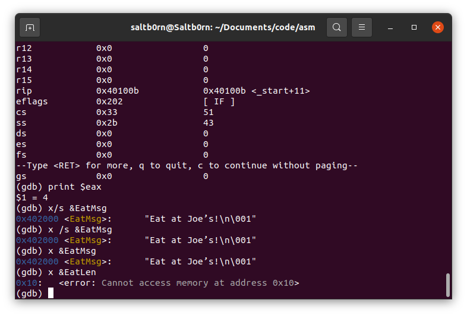
Figure 34: 检查数据
关于检查数据的内容实际上非常多, gdb 预装的文档可能没那么详细,因此非常推荐去阅读在线文档: Examining Data.
到这里调试要做的事情和常用命令基本介绍完了,更多的还是靠自己学习.
调试的工作完成后,就可以使用 quit 命令就可以退出 gdb 了.
最后提醒一下,前面介绍的所有命令基本上都有别名,并且大部分都是缩写,
比如 nexti 的别名 ni,具体可以去看 aliases 类的说明.
深入学习汇编
这整个章节都是为前面的 使用汇编语言开发的流程 的内容作拓展,因此重复的内容就不再赘述了.
指令的相关基础
经过前期大量的基础工作,在前面已经体验过一把简单的开发了,现在可以开始认真学习指令了.
但是作为一个初学者,获得能够自己解决书本以外问题的能力才是对的,
我们学习的是 x86 指令集,因此要先学会看懂指令集参考文档的说明,这样以后遇到不懂的指令可以自行查阅.
大部分指令(包括最常见的 MOV)都有1到多个操作数,有些则不需要操作数.
比如,
mov eax, 1
这条指令有两个操作数,第一个是寄存器地址 EAX,第二个是数字1.
根据汇编语言的惯例,从左边起的第一个操作数叫做目的操作数(destination operand),第二个叫做源操作数(source operand).
MOV 指令是把源目标操作数复制到目的操作数上,看起来这两个操作数的名字可以说十分贴切.
大部分拥有操作术的指令都遵守这个规律: 当这些指令生成一个值时,这值会被保存到目的操作数上.
只是对于其它指令来说,操作数的名字可能没有那么贴切.
有三种不同的数据可以用来作为操作数: 内存数据(memory data),寄存器数据(register data)以及立即数(immediate data).
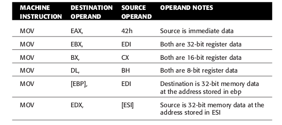
Figure 35: MOV和它的操作数
立即数
mov eax, 42h 就是一个很好的立即数使用例子,其中的"42h"就是立即数,立即数只能作为源操作数.
立即数通过一种叫做直接寻址(immediate addressing)的模式来进行访问的.
叫做"直接寻址"是因为被寻址的数据既不在寄存器中,也不在内存上,而是在指令自身中.
42h 就是一个数字,除了数字之外还有字符串.
比如 mov eax, 'WXYZA',字符串会按照 ASCII 翻译成对应的字节序列,
因为 CPU 是用的是小段字节序列,所以最终结果是"0x415a595857".
在使用 gdb 调试时可以利用 print $eax 看到 eax 的值是"0x5a595857",
这是因为 eax 是32位寄存器,只能储存4个字节,所以只能存前四个字符对应的字节.
寄存器数据
储存在寄存器上的数据就叫做寄存器数据,这种数据是通过一种叫做寄存器寻址(register addressing)的模型进行访问的.
在很早之前就提过了,寄存器的名字就是地址.
汇编编译器会留意那些不合理的地方,比如把一个4字节大小的源操作数移动到一个2字节大小的目的操作数上,
举个例子, mov eax, bx,一个寄存器32位,一个16位,在汇编时会出现以下错误:
"error: invalid combination of opcode and operands".
反过来可能会合理一点,然而 CPU 不直接支持,
如果真的想要让小位寄存器往大位寄存器上移动,可以利用“新寄存器拓展于旧寄存器"这一点,比如:
mov eax, 'WXYZ' mov bx, ax
ax 是 eax 的一部分,这样 eax 就可以间接通过 ax 把值储存到 bx 上,当然只会储存 eax 的最低有效字节(least significant byte)方向的两个字节.
我们可以通过 MOV 来交换两个地址上的值,比如交还 EAX 和 EBX 两个寄存器的值,
mov eax, 1 mov ebx, 2 mov ecx, eax mov eax, ebx mov ebx, ecx
实际上有一条更方便的指令来完成这件工作: xchg eax, ebx.
内存数据
内存数据(memory data)就是储存在内存上的数据,这只能通过内存地址来访问.
在汇编语言里面,要想获取地址上的数据需要这么做: [V],
这个 V 可以是一个寄存器,可以是一个变量(也就是在 section .data 定义的对象),可以是一个数字等等,
NASM 会根据它们计算出一个地址,这个地址叫做有效地址(effective address),然后访问这个地址上所储存的数据.
我们先来讨论几种基本的情况:
当 V 是数字时,就会以这个数字做为地址,比如 V 为 0x4327 时,就表示 0x4327 这个地址;
当 V 是字符串时,字符串会转换成对应的数字,然后把这个数字做为地址,在这个地址上访问数据;
当 V 是寄存器名字时,如果寄存器储存的数据是数字,那么把这个数字做为地址,在这个地址上访问数据;
那么当 V 是变量呢?
在汇编语言里面,变量先对应一个数字地址,在这个数字地址上储存着一个数据,这样变量就 间接 对应了这个数据.
像 C 语言这样的高级语言,直接使用变量就是获取它的数据,想获得变量的地址需要使用 &变量 这样的形式.
因此在汇编里面,变量在某种意义上也是一个地址,因此变量也叫符号地址(symbolic address),
所以当 V 是变量时,就访问变量对应地址上的数据.
整体上来看都是把 V 转换成数字,把数字作为地址,再从这个地址上访问数据.
上面都是基础情况,开发人员可以通过一个多项式来计算出有效地址,这就是一般以外的情况了,
这也是开发人员必须掌握的内存寻址技能的一部分,它有一套计算规则,而这套规则是于32位保护模式开始出现的,
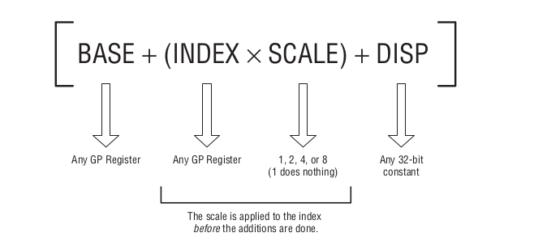
这个多项式就是计算规则,每一项都是可选的,其中第二项目的括号不是必须的.这里只是为了突出第二项整体而已;
这里的 GP register 全称是通用寄存器(general purpose register),要注意,16位和8位寄存器不能用这条式子,(不明白的话好好想想为什么!)
位移(displacement)就是一个地址到另外一个地之间的距离,和偏移(offset)有点类似.
下面有几个例子可以看一下,
mov eax, [ebx] mov eax, [EatMsg] mov [eax], ebx mov eax, [0x6000e8] mov [EatMsg], byte 'R' mov eax, [ebx+16] mov eax, [ebx+ecx+11]
你可能注意到 mov [EatMsg], byte 'R' 可能不太好理解,它是把字符'R'复制到 [EatMsg] 高位的第一个字节上,
这条指令实际上是向内存进行了写入,所以 EatMsg 上的数据变为了"Rat at Joe's".
这里的 byte 叫做大小说明符(size specifier), 汇编语言并不像高级语言那样会"记得"变量的大小,
所以 在写入内存的时候需要告诉 NASM 写入的数据大小, byte 表示写入 1 个字节.
这条指令还可以这么写: mov byte [EatMsg], 'R' 或者 mov byte [EatMsg], byte 'R'.
此外还有别的大小说明符: word, dword 等等.
有时候可能需要把计算出来的地址保存下来,那么可以用 LEA 指令来完成,
比如把 ebx+ecx+11 的结果保存在 eax 上,那么就要这么做,
lea eax, [ebx+ecx+11]
这样,计算得到的有效地址就被储存在 eax 上了,这个过程中没有访问到内存上.
寄存器一般都是储存内存地址的,而在保护模式到来之前,只有部分通用寄存器能储存内存地址: BX, BP, SI 和 DI.
像 AX, CX 和 DX 就不行.在当年要访问内存地址上的数据是需要像这样的: [DS:BX], [ES:BP],
今天看来段寄存器已经是"时代眼泪"了,或者说早期的设计缺陷了.
标记寄存器
这里是对标记寄存器的简短学习,我们学习的是32位的标志寄存器 EFlags,标志寄存器上的 1 bit 就是 1 个 flag.
每个 flag 是独立的, CPU 可以在必要的时候把其中的某一个 flag 设为1或者清0, 其目的为了告诉程序员 CPU 内部处于什么样状态.
这样可以让程序进行测试处于那种状态,并根据那些状态采取相应的行动.
当然程序员也可以手动设置 flag 来作为一种给 CPU 发送信号的方式,不过这种情况很少见.
实际上,并非所有 flags 都是有用的,有些 flags 都没有被 Intel 定义.
下图是 flags 的分布图,黑色表示 flags 未定义,灰色表示 flags 不常用,白色表示在用户模式下很有用.

Figure 36: x86 EFlags 寄存器
主要介绍白色的那几个 flags.
CF (Carry flag)
用于无符号运算,所谓的无符号就是数字没有负号,也就是对正数进行运算.
如果运算的结果产生了进位(carry out)或者借位,那么
CPU就会设置CF为 1;如果就把CF清 0.当然进位和借位是相对于储存位数来说的,也就是计算结果超出目的操作数的储存能力才会设置
CF为 1.比如 \((2^{32} - 1) + 5 = 4294967300\) 就超出了操作数能够储存的最大值 \(2^{32} - 1 = 4294967295\),
这个时候
CF就会被设置为1表示进1,然后多出的值 \(4294967300\ \And\ 4294967295 = 4\) 就储存在操作数上.反过来,如果是 \(4 - 5\),那么就会发生借位变成 \((4294967296 + 4) - 5 = 4294967295\),同样超出了操作数的储存能力,
这个时候
CF也会被设置为1,计算结果 4294967295 储存在操作数上.当然也包括了位移操作这种情况.
PF (Parity flag)
PF是告诉我们计算结果在二进制表示下,值为 1 的位的数量是奇数还是偶数.当计算结果的"1"位的数量为偶数时,
PF被设置为 1,否则被清 0.比如当计算结果为
0F2H(11110010) 时,PF就被设置为 1;当计算结果时 0 时,
PF同样被设置为 1;当计算结果为
3AH(00111100) 时,PF就会被清 0.在当年那个计算机以用串行端口(serial port)作为主要通信手段的年代,
PF是用来做数据完整性检测(parity checking),现在已经很少用上了,所以这个
flag可以不用太过关注.AF (Auxiliary carry flag)
这是用于
BCD (Binary-Coded Decimal)运算的,所谓BCD就是一种用二进制编码成十进制数,这个数由整数部分和小数部分组成.BCD运算把每一个操作数的字节平均分成两半,其中一半看作整数部分,另外的半看作小数部分,两个部分组成一个浮点数.当
BCD运算的结果在16进制表示下发生了进位或者借位,就会把AF设置为 1,否则清 0.比如 \(5 + 11 = 16 = 10H\) 就会把
AF设置为 1,而 \(5 + 10 = 15 = FH\) 则会把AF清 0.如今
BCD运算的相关指令已经很少用了.ZF (Zero flag)
当目的操作数是变成0,
ZF就会被设为1,否则清0.ZF经常用来做条件跳转(conditional jumps).SF (Sign flag)
当一个操作的结果是把一个操作数变为负数(negative)时,
SF会被设置为1,否则清0.我们说的变为负数是指,在进行有符号运算(signed arithmetic operation)的过程中,操作数的最高位(这个位也叫符号位,sign bit)变为1.
TF (Trap flag)
TF是能够单步执行程序的原因,通过强迫CPU在调用其中断程序(interrupt routine)前只执行一条指令.这个
flag在正常开发中并不是特别有用.IF (Interrupt enable flag)
IF是一个双向flag,CPU会在某些条件下设置它,开发人员也可以使用STI和CLI指令设置它.当
IF被设为 1 时,中断(interrupt)功能就被启用了,它可以在需要的时候出现.你可能疑惑为什么说"中断功能被启用",你可以理解为"中断"是一种随时都可以发给
CPU的信号,而只有
IF设置为 1 时CPU才会“理会”这些信号.因此当
IF被清 0 时,CPU就无视任何中断.在
DOS的时代中,普通程序可以在实模式下能够自由地对IF进设置和清零;而在
Linux下的IF是由操作系统使用的,而有时候是为驱动所用,如果人为对它进行设置和清零,
Linux就会发出一个一般保护错误,并且停止程序.在使用
gdb调试器中暂停程序时可以看到这个flag被设置为 1.DF (Direction flag)
这和关于字符串处理的指令有关系,告诉
CPU要从哪个方向(up-memory or down-memory)处理字符串.当
DF被设置为 1,字符串指令就会从字符串的"高位字节"往"低位字节"的方向开始处理;当
DF被清 0,就从"低位字节"往"高位字节"方向处理.OF (Overflow flag)
在有符号整数运算中,如果运算结果超出操作数的储存能力(计算结果溢出),那么就会采用像
CF一样的进位处理.
前面的 flags 的描述都是一般化的,有些指令会对 flags 造成影响,然而造成的影响不一定和 flags 的一般化描述一样.
比如,一些指令的作用是产生一个 0 并且保存在操作数上,而这其中有些会把 ZF 设置为 1,而其它指令则不会.
再比如,
mov eax, 0FFFFFFFFH inc eax
INC 的作用是对操作数加 1 并且把结果保存在操作数上,然而这并不像 add eax, 1 把 CF 设为 1.
mov eax, 0 dec eax
DEC 的作用是对操作数减 1 并且把结果保存在操作数上,同样也不像 sub eax, 1 那样把 CF 设为 1.
因此使用指令时需要提前去查看参考文档了解指令对 flags 的影响.
根据flags进行条件跳转
有一种指令用来跳转到某个位置进行执行,这种指令叫做条件跳转指令(conditional jump).
C 语言有一个 goto 语句就是干的这种事情,可是 C 语言不太建议使用 goto,不过汇编语言可不一样.
条件跳转指令是先测试某一个 flag 的值,如果它的值符合条件就跳转到程序中的其它地方.
比如 JNZ 指令就是先测试 ZF 是否被清 0,如果 ZF 清 0了就开始执行跳转,否则执行下一条指令.
mov eax, 5 DoMore: dec eax jnz DoMore
这里 DoMore: 是一个标签(label),在汇编语言里面,一个标签就是一个内存地址的别名.
在 NASM 里面,一个标签就是一个字符串后面跟着一个冒号(:), 通常 标签放在包含指令的代码行上,不过这个冒号是可选的,
如果标签后面没有冒号,并且是单独作为一行,那么这种标签被叫做孤儿标签(orphan labels),汇编时会出现警告,还有可能会出 bugs,
也就是说,标签后面没有冒号时不能顺便换行.
这其中有些标签会以下划线(_),句号(.)或问号(?)开头,这些标签对于汇编器有特殊含意的,请在理解它们的作用后再使用.
此外要注意一点, NASM 里面的标签是区分大小写的,
(如果不想做任何测试直接跳转,可以使用 JMP 指令.)
我们还可以把一个标签变成一个函数(procedures),
section .data section .bss section .text global _start _start: nop mov eax, 5 call DoMore mov eax, 1, mov ebx, 0 int 80H DoMore: dec eax jnz DoMore ret
上面的例子中的 DoMore 就变成一个函数了,可以使用 CALL 指令进行调用.
一个函数的结构要有以下这些点:
- 必须以标签开始,标签的名字就是函数的名字;
函数内部必须至少有一个
RET指令,这个指令是作为函数的"出口",在有多个
RET指令情况下,使用哪个RET取决于条件跳转;- 函数可以通过使用
CALL调用另外一个函数;
还有一个点要注意: 函数 DoMore 定义在了 sys_exit 这个退出程序的系统调用之后.
这是因为 CPU 会从上到下逐条执行指令,如果定义在 sys_exit 之前,
哪怕没有 call DoMore 指令的存在,函数 DoMore 也是可以执行,
这跟高级语言那种"只会在被调用才执行"的函数不一样,为此才把函数定义在 sys_exit 之后.
函数对应的标签是一个地址,因此调用函数实际上就是跳转到函数的地址上,这就是高级语言函数调用的真相.
你可能很好奇: 如何在函数内部进行内部跳转呢?
毕竟跳转只能依靠条件跳转指令,而这些指令又依靠标签,但是函数就是以标签开头的,那在函数内部的标签不就是另外一个函数吗?
NASM 提供一种标签叫做局部标签(local labels),它们是以句号(.)开头的标签;没有以句号开头的标签都叫做全局标签(global labels).
上面的 _start 和 DoMore 就是全局标签.
我们把上面的例子改成如下:
section .data section .bss section .text global _start _start: nop mov eax, 5 call DoMore mov eax, 1, mov ebx, 0 int 80H DoMore: cmp eax, 3 jz .exit1 sub eax, 1 jnz DoMore ret .exit1: ret
在 EAX 减小的过程中,如果 EAX 的值等于 3,那么就直接进入 .exit1 进行退出,
CMP 指令是比较两个值的大小,如果目的操作数等于源操作数,那么 ZF 设置为 1, JZ 就是检查 ZF 是否为 1.
局部标签是属于它前面所遇到的第一个全局标签的,所以 .exit 是属于 DoMore 的,而不是 _start 的.
NASM 支持从一个全局标签里面跳转到另外一个全局标签的局部标签上,我们把上面的例子再改一下,
把 .exit1 定义为 OutSide 的局部标签,从 DoMore 跳转到 OutSide 的 .exit 上,
section .data section .bss section .text global _start _start: nop mov eax, 5 call DoMore mov eax, 1, mov ebx, 0 int 80H DoMore: cmp eax, 3 jz OutSide.exit1 sub eax, 1 jnz DoMore ret OutSide: .exit1: ret
但是这样很容易因在代码量大的时候导致逻辑混乱而出 bugs,因此不建议这么做.
此外开发时多要遵守一个原则: 一个全局标签尽量不要有太多局部标签,一个局部标签的区域应该尽量简短.
关于函数的细节还有很多没有提到,这里先有个印象,后面会继续补充细节.
有符号和无符号值
有符号值就是我们说的负数,无符号值就是正数,我们说的符号就是值正号和负号.
想要明白两者的差别,就需要明白 CPU 把符号(sign)存放在哪里.
其实正负号是储存在数字的二进制表示的最高位上,该最高位叫做符号位(sign bit),
如果符号位的值是 1,那么就表示该数字是负数;如果是 0 就表示正数.
然而一个"二进制表示"既然可以是一个正数,也可以是一个负数,这取决于开发人员怎么看待它.
比如 10101111 可以表示一个有符号值 -81,也可以表示一个无符号值 175.
但这不是说直接更改最高位就能改变正负号了, 就拿 42 的 8 位二进制表示 00101010 来说,就不可能直接改最高位就能得到 -42 的.
汇编语言里面是用二的补码(two's complement)来处理负数的,具体算法是把一个二进制数字里的原来的 1 变成 0,原来的 0 变成 1,然后加 1.
因此 -42 的二进制表示应该是 11010110.关于二的补码的详细内容就不展开了,可以看这里.
幸运的是有一条 NEG 指令可以帮助直接计算一个数的的负数.
对于 8 位二进制表示来说,如果要表示有符号数,那么能够表示的数字范围就是 -128(10000000) 到 127(01111111).
下面是常见不同大小(指位数)的数值大小.
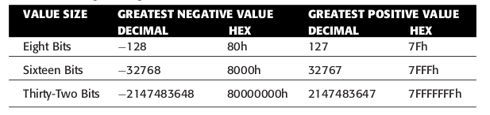
Figure 37: 常见的范围
处理有符号值会有一个问题: 如何处理不同位数的有符号值.符号位是处于最高位的,这就是问题所在.
当把一个有符号的值移动到一个更大寄存器或者内存地址,会发生什么情况呢?
(具体做法在前面讲寄存器数据的时候就讲过了,不再说了)
比如当我们要把 8 位大小的有符号值 -42 复制到 32 位的寄存器上, 原本的符号位就不再是符号位了.
mov al, -42 mov ebx, eax
这个时候 EAX 和 EBX 的值就是 214 了,可以通过调试器来确认这一个事实.
针对这个问题, x86 CPU 提供了 MOVSX (Move with Sign Extension)指令来解决这个问题,
mov al, -42 movsx ebx, al
EBX 现在的值就是 -42, EAX 依然是 214.
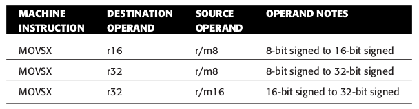
Figure 38: MOVSX 指令
这图是 MOVSX 指令的用法,可以看到上面是用了一些 r16, r/m16 这样的标记,这些标记在很多指令参考文档都有用,因此这里就稍微总结一下.
r 是寄存器(register)的首个字母,表示寄存器数据, 但是不包括段寄存器的数据,
段寄存器有专门的表示: sr 表示,它是 segment registers 的缩写,
后面的数字表示位数,所以 r16 就表示 16 位寄存器, sr 没有后缀数字;
m 是内存(memory)的首个字母,表示内存数据的意思,后面也有数字后缀; r/m 就表示是寄存器数据或内存数据.
除了上面的这些,还有 i 表示立即数,后面也有后缀数字表示大小,最后还有 d 是位移(displacement)的首个字母,后面也跟着后缀数字.
隐式操作数
不是所有指令都是像 MOV 那样有一个目的操作数和源操作数的使用方式,它直接告诉你作用于哪些寄存器或内存地址.
而有些指令则不是,比如对无符号数做乘法的 MUL 指令: 把两个乘数(factors)相乘后得到一个乘积(product),但它的用法就只接受一个操作数,
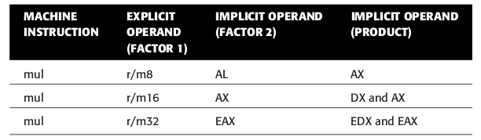
Figure 39: MUL 指令用法
我们把这个需要开发人员提供的操作书叫做显式操作数(explicit operand),实际上 MUL 还需要多一个操作数,
而这个操作数的选择是 MUL 定义好的,无需开发人员提供,这种操作数就叫做隐式操作数(implicit operand).
为什么要这么设计呢?因为两个乘数的乘法结果可以是比任意一个乘数大得多,不可能尊从"把指令产生的值储存到目的操作数上"的规范,
乘法运算的这个问题对于所有计算机架构都是存在的,解决思路也很简单,主要是利用了一个规则:
两个乘数的二进制位数分别是 \(m\) 和 \(n\),乘积的二进制位数是 \(p\), \(p \le 2 \times max(m,n)\).
比如可以用 8 位表示的 255, \(255 \times 255\) 的乘积就是需要用 16 位来表示的.
因此,你可以发现 MUL 用来储存乘积的操作数的位数大小必须是显式操作数位数大小的两倍,(用于储存乘数的两个操作数的位数是一样的.)
当一个寄存器不够时,就用两个寄存器储存乘积,拿 r/m16 的来说,乘积的二进制中的高位 16 位储存在 DX 上,低位 16 位储存在 AX 上,
比如 02A456Fh, 02Ah 会被储存在 DX 上,而 456Fh 被储存在 AX 上.
而进行除法运算的 DIV 指令就没这个问题.
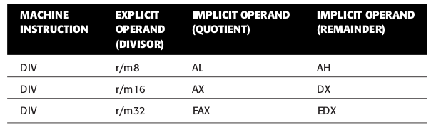
Figure 40: DIV 指令用法
栈的使用
前面有提到过栈(stack)的相关概念,重复的就不赘述了,这里稍微补充一下它在 x86 里面是什么样的.
对于 x86 硬件而言它是一套储存机制,同时也是所有计算的一个关键概念.
栈从 1950s 开始就成为计算机中不可分割的一部分,但是它不像寄存器那样作为硬件出现在 CPU 里面,而是作为一个抽象概念出现在内存上.
在 x86 计算机中,栈在内存里是上下颠倒,栈顶在内存低位,栈底在内存高位.
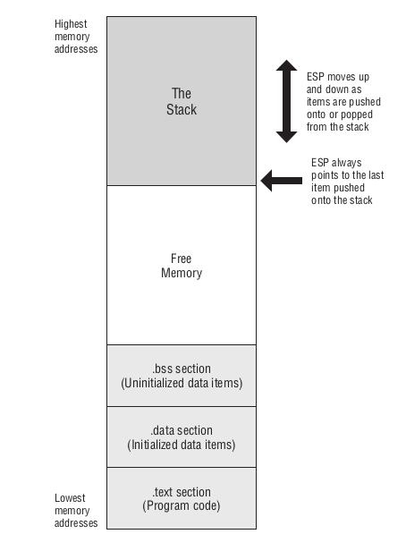
Figure 41: x86 可执行文件的内存映像
栈是往低位空闲内存进行增长的,需要用 ESP 寄存器来记录栈顶的内存地址, ESP 有时候会被叫做栈指针(stack pointer).
在运行时, C 程序会在会在这块空闲内存上划出一个叫堆(heap)的区域,用来为变量分配空间,汇编程序也可以这么做,只是实现起来比较麻烦.
程序在开始运行时,栈并不是完全空的,里面会有些有用的东西,之后补充.
一般来说很难出现栈增长碰撞到 .bss/.data/.text 部分,如果真的发生了, Linux 会发出一个段错误(segmentation fault)并且终止程序.
栈支持 PUSH 和 POP 操作,那么就必定有相关的指令.
PUSH 操作的相关指令有 PUSH, PUSHF, PUSHFD, PUSHA 和 PUSHAD.
PUSH 指令可以把一个16位/32位大小的寄存器/内存值压进栈, 但是, 在64位下 PUSH 指令只能接收16位/64位大小的寄存器,
286 以后的 CPU 甚至能支持把立即数压进栈,如果是32位 CPU, PUSH 的每个立即数就占4个字节,64位的占8个字节,
后面栈相关的指令同理,就不重复提了,
PUSH 实际上只是把栈指针寄存器减去了压进数据的大小,并且把栈指针寄存器的值作为写入数据的地址,
比如压进的数据大小是 N 个字节,那么栈指针寄存器就减去 N,把栈指针寄存器作为地址,在这个地址上写入数据;
PUSHF 指令把16位的标志寄存器 FLAGS 压进栈, PUSHFD 则是把32位标志寄存器 EFLAGS 压进栈;
PUSHA 指令把8个16位的通用寄存器, AX, CX, DX, BX, SP, BP, SI 和 DI 依次压进栈,
PUSHAD 指令把8个32位的通用寄存器, EAX, ECX, EDX, EBX, ESP, EBP, ESI 和 EDI 依次压进栈.
其中 PUSHF/PUSHFD 和 PUSHA/PUSHAD 是不支持操作数的.
我们从 PUSH 指令入手,当使用 PUSH 把一个16位寄存器上的内容压进栈时,因为我们采用的内存是一个内存地址储存一个字节的内容, 16位寄存器的内容大小就是2个字节,所以 ESP 的值需要减少 2;
如果 PUSH 的操作数是一个32位寄存器,那么 ESP 的值就要减少 4.
POP 操作差不多就是 PUSH 操作的逆过程了,相关指令有 POP, POPF, POPFD, POPA 和 POPAD.
POP 指令根据操作数大小来让栈顶弹出对应个数的字节,比如操作数是16位寄存器,那么就弹出2个字节,如果是32位寄存器,那么就弹出4个字节,
实际上 POP 指令就是先把栈顶的数据复制到操作数上,然后把栈指针寄存器的值加上数据的大小,这样就能读取上一个被压进的数据,看上出去栈顶的数据就被"弹出"了,
实际上数据还在的,如果这个时候 PUSH 了一个相同大小的数据,那么刚才的数据就会被覆盖掉;
POPF 指令让栈顶的2个字节弹出并且储存到标志寄存器 Flags 中;
POPFD 指令让栈顶的4个字节弹出并且储存到标志寄存器 EFlags 中;
POPA 指令让栈顶的16个字节弹出,并且把其中的14个字节依次储存到 DI, SI, BP, BX, DX, CX, AX 7个通用寄存器上, SP 对应的2个字节被无视;
POPAD 指令让栈顶的32个字节弹出,并且把其中的14个字节依次储存到 EDI, ESI, EBP, EBX, EDX, ECX, EAX 7个通用寄存器上, ESP 对应的4个字节被无视.
来通过这几个指令看栈如何工作的,
push ax push bx push cx pop dx

Figure 42: 栈如何工作
int80以及软中断(software interrupt)
我们在前面都了解到自从保护模式出来后,操作系统都不允许应用程序直接访问硬件资源,只能通过操作系统来代劳.
int 80h 这句指令就是告诉 Linux 调用系统资源.
INT 指令的全称叫做 interrupt,这涉及了一个叫做软中断(software interrupt)的概念,它是实现"引用程序只能通过操作系统提供的方式来调用硬件资源"的关键手段,名字来源于一个叫做硬中断(hardware interrupt)的概念,稍后会介绍.
Linux 采用 kernel 的设计是为了禁止应用程序直接访问操作系统,被恶意软件接恶意破坏,这在前面就说过了;
然而这样就引发了另外一个问题, Linux 把东西藏了起来,虽然说它提供了一些可调用指令,但是指令在内存上的位置会因为系统的升级/修复等活动发生改变,那么用应用程序又是如何知道想要调用的指令在哪个位置上呢?
事实上,应用程序不需要知道这些也可以正确地调用到指令,人们把解决这个问题的东西叫做内核服务调用门(kernel services call gate),它就是通过 x86 的软中断实现的.
在 x86 内存中,从0开始的1024个字节是被保留来存放“特别数据"的,这1024个字节是一张特别的查找表(lookup table),
每4个字节存放一个"特别数据",就是说可以存放256个"特别数据"/条目.
这张表叫做中断向量表(interrupt vector table),这个表上每一个条目的 地址/编号 叫做中断向量(interrupt vector).
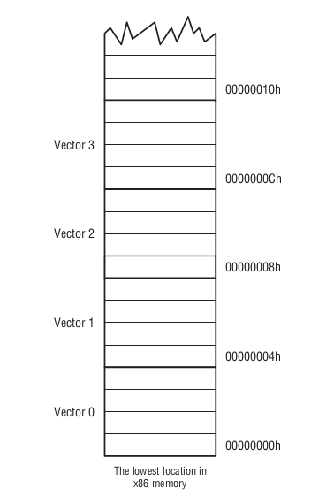
Figure 43: 中断向量表
所存放的"特别数据"实际上是系统提供的可调用指令的地址,4个字节32位刚好可以表示内存上的任意一个地址,
每次启动机器时, Linux 和 BIOS 都会往表里面填充可调用指令的地址,哪个中断向量上存放哪个可调用指令的地址都是操作系统规定好的,即便操作系统进行了更新,这点也是不会变的;
想调用哪个可调用指令,只要知道哪个中断向量储存了它的地址就可以.
回到 int 80h 上, INT 的操作数就是中断向量,这条指令实际上是先从 80h 上找到可调用指令的地址,然后找到并且执行对应指令.
80h 指向的实际上是一个叫做服务调度器(services dispatcher),可以通过它来调用到差不多200多个 Linux 内核可调用指令.
一般来说程序是不需要直接访问中断向量表的,况且保护模式会限制这么做,而服务调度器会帮助开发者在无须了解中断向量表的情况下访问到对应指令.
此外, int 80h 还会把下一条指令的地址压进栈,我们把这个地址叫做返回地址, CPU 在执行完 int 80h 后返回到这个地址上.

Figure 44: int 80h 的完整过程(一)
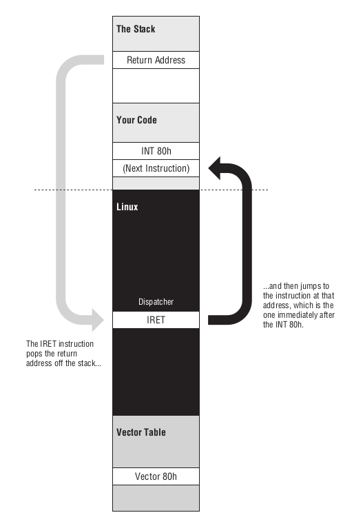
Figure 45: int 80h 的完整过程(二)
可以看到服务调度器在执行完指令以后会执行一个 IRET 的指令,它的全称是 interrupt return,
作用就是把 INT 压进栈的地址弹出来,并且根据这个地址进行跳转.
//
软中断的名字来源于硬中断,电脑内置的电气系统让电路板给 CPU 发送电信号, CPU 上有种特殊的金属针(pin)会被电路板上的设备改变电压,这就是发送电信号的本质.
一个电信号叫做一个硬中断(hardware interrupt),就像软中断一样,硬中断被编号了,是中断向量表的条目,这张表上面存放的数据叫做中断服务程序(interrupt service routine, ISR)的地址.
ISR 会执行一些与发送电信号的硬件有关的事情.
和软中断不同之处在于硬中断不使用 INT 指令进行触发,并且软中断的向量表是软件的一部分;
当 CPU 接收到硬中断后, CPU 会把返回地址压进栈里,在 ISR 执行完毕后会通过 IRET 指令返回,就像软中断所做的一样.
位操作
位映射(bit mapping)是汇编语言里广泛使用的一项技术,它为字节的每一个位(bit)赋予特殊含义,榨干内存的最后一个位来节省空间.
按照不成文的规定,在汇编语言里面,会给位序列的每一位进行编号,这叫做位编号(bit numbering).
从最低有效位(least-significant bit, LSB)开始,第一位编码为0.
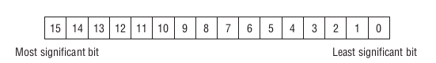
Figure 46: 对2个字节进行位编码
日常使用的相关指令有这些,针对逻辑运算的指令叫做位逻辑指令(bitwise logical instructions),有 AND, OR, XOR 以及 NOT;
用于移位或者旋转位的指令有 ROL, ROR, RCL, RCR, SHL 和 SHR.
汇编语言把一个1位(a 1 bit)看作一个 True,把一个0位(a 0 bit)看作一个 False.
逻辑运算的概念就不在赘述了,贴几张真值表(truth table)就算了.

Figure 47: AND 真值表

Figure 48: OR 真值表

Figure 49: XOR 真值表
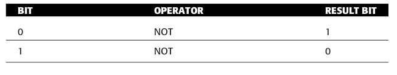
Figure 50: NOT 真值表
前面提到的几个位逻辑指令里面, AND 用的是最多的,它的一个主要用法就是位掩码(bit mask),作用是把无用的位都设置为0位.

Figure 51: AND AL, BL
还有一个比较有意思的是 XOR 指令,它的全称是 exclusive or,意思是相同的为 False, 不同的为 True,
它可以用来做很多事情,在以前它经常用来快速给寄存器清零,比如给 AL 清零.
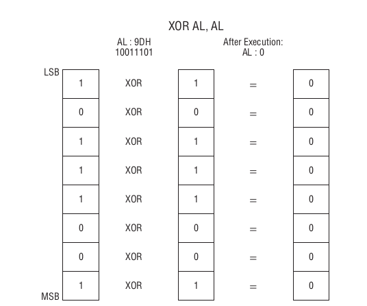
Figure 52: XOR AL, AL
对于位移操作,先来看看 SHL 和 SHR 指令,它们分别是把位往左和往右移 N 位,它们的用法大概是 SHR/SHL r/m8/16/32 i8/16/3 这个样子.
在数学上,把一个数 M 往左移 N 位的结果就是 \(M \times 2^{N}\), 而往右移动 N 位的结果就是 \(M \times 2^{-N}\).
然而在汇编是有位数限制的,比如,对 AL: 0000 1000 移动 N 位,那么这个 N 的值最大应该是8,这是因为 AL 只有 8 位.
假设这个 N 为 2,那么往左移的话就是在 LSB 后面加多两个0,再去掉 MSB 的两位,结果就是 0010 0000, 去掉的位就是溢出的;
如果是往右移,那么就是先在 MSB 前面加上两个0,在去掉 LSB 的两位,结果就是 0000 0010.
前面提到过位移操作也会能改变 CF, 只要最后溢出的一位是1,那么 CF 就会被设置成1, 这其实和前面提到过的进位或借位说法是对应的,可能这还更好理解一点.
来看几个例子,
假设对 AL: 1000 0000 进行左移1位,因为溢出的是 MSB,而它是1,那么 CF 就被设置为1;如果是左移2位,因为溢出的是 10,先溢出的是1,然后是0,所以 CF 就被清零.
假设对 AL: 0000 0001 进行右移1位,因为溢出的是 LSB,而它是1,那么 CF 就被设置为1;同理如果是右移2位,溢出的是 01,先溢出的是1,然后是0,所以 CF 就被清空0.
SHR/SHL 都会因为溢出而失去原来储存的部分信息,那么有没有办法可以避免这个问题呢?答案是有的,那就是旋转(rotate)命令.
首先介绍 ROL 和 ROR 这两个命令,它们的全称分别是 Rotate Left 以及 Rotate Right.
比如,我们对 AL 左旋转1位,变化过程是这样的,
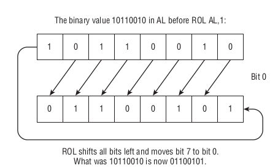
Figure 53: ROL AL, 1
简单来说, ROL 指令就是把 MSB 的 N 位移动到 LSB 后面; ROR 指令同理,只不过它是把 LSB 的 N 位移动到 MSB 的前面.
这两个指令是不会改变 CF 的值的,因为无论它们如何操作都不会发生溢出.
RCL 和 RCR 同样是旋转指令的一种,跟 ROL 以及 ROR 相比,它们需要借助 CF 进行旋转;
它们的全称分别是 Rotate Carray Left 和 Rotate Carray Right,来看一下 RCL 如何对 AL 进行旋转的,
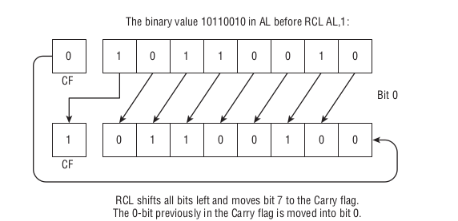
Figure 54: RCL AL, 1
简单来说就是 RCL 先把 CF 插入到到 LSB 后面,然后把溢出的 MSB 的值储存到 CF 上,如果是旋转 N 位,那么就把这个过程循环 N 次;
RCR 同样道理,只是先把 CF 插入到 MSB 前面,然后把溢出的 LSB 的值储存到 CF 上而已.
判断以及跳转
跳转分无条件跳转(unconditional jumps)和条件跳转(conditional jumps).
我们很熟悉的一个无条件跳转的指令就是 JMP,只要指定了跳转目标就一定会跳转.
而条件跳转是需要符合条件才会发生跳转的,当标志寄存器的某一个 flag,甚至几个 flags 符合条件才能跳转,
否则直接执行下一条指令.
比如 DEC 指令,对操作数减1,执行过后还会看操作数的值是否为0,如果为0就把 ZF 标志设置为1.
如果我们要在操作数到0时进行跳转,那么可以用 JZ(Jump if Zero) 指令来测试 ZF 是否为1,如果 ZF 是1就会进行跳转.
JZ 就是一个条件跳转指令,和条件跳转指令配合使用最多的就是 CMP 指令: CMP op1, op2.
CMP 会先计算出结果 \(result = op1 - op2\),然后根据 result 来按照情况设置 OF, SF, ZF, AF, PF 以及 CF 标志.
基本上条件跳转的判断就是 \(>\), \(<\), \(\ge\), \(\le\), \(=\) 以及它们的取反(not)变种这几种,
由于 x86 还分有符号和无符号运算,因此最终一共有 \(5 \times 2 \times 2 = 20\) 个条件跳转指令.
这些指令的助记符会通过 above 和 below 来用于无符号值之间的比较, greater than 和 less than 用于有符号值之间的比较.
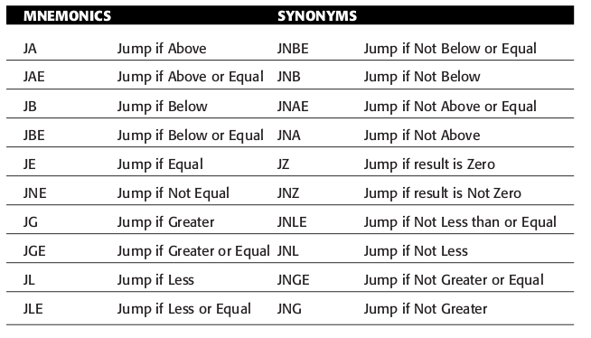
Figure 55: 条件跳转指令的助记符

Figure 56: 条件跳转指令
还有提供 TEST 和 BT 这样的指令来检测位的值.
首先是 TEST op bit-mask, 用来检查某些位是不是设置为了1,如果不是,那么 ZF 就变为1.
比如 test ax, 08h 就是测试 ax 第3位是否设置为1, 08h 在二进制就是 00000100.
其实 test 指令很简单,它其实就是先用 AND 指令进行运算,不过这个运算不会改变目的寄存器的值,
如果运算结果为0,那就证明所有被测试的位没有设置为0,这个时候 ZF 就会被设置为1.
BT op bit-number, 用来检操作数某一位是的值是0还是1,其实 BT 指令就只是把某一位的值复制到 CF 上,
然后可以使用 JC 或者 JNC 来判断跳转.比如 bt eax, 4 就是测试 EAX 的第4位的值.
表
其实我们在前面就见到过表(table),字符串就是表(table)的一种.
DB 指令的作用也可以理解为定义一张表,表的每个元素的大小为1个字节,第一个元素的地址作为整个表的地址.
根据维度划分,表主要分一维表和一维以上的多维表.
前面的 EatMsg 就是一张一维表;
在汇编语言里面,实际上是只有一维表,没有二维表(two-dimensional table)以及更高维度的表.
不过,我们可以把一维表定义为一个二维表,或者更高维度的表.
比如,二维表满足这些特性: 表的元素本身是一张表,称之为子表(subtable),子表也包含了一些元素.
那么只要把一维表"设计"成满足这样访问的方式即可:
可以根据表获取到任意的一个子表地址,再可以根据子表的地址获取到子表里任意的一个元素.
比如,
SECTION .data DDTable: db 10, 12, 14, 16 db 20, 22, 24, 26 db 30, 32, 34, 36
NASM 可以像上面那样把一个表用 db 分成几行来定义, NASM 会把几行定义合并在一起.
上面的 DDTable 是一个有12个元素的表,可以把每一行看作一个子表,每个子表有4个元素.
注意,这里不能这么写:
SECTION .data DDTable db 10, 12, 14, 16 db 20, 22, 24, 26 db 30, 32, 34, 36
如果定义一个变量不带冒号(:),并且变量单独占一行,那么这样的变量叫做孤儿标签(orphan labels)
假设现在需要取第2个子表的最后一个元素,那么就要这么做,
SECTION .text GLOBAL _start _start: mov ecx, 1 mov al, byte [DDTable+ecx*4+3]
或着这样,用一张表储存内存地址,而这些内存地址是其它表的地址,在32位保护模式下,储存一个内存地址需要32位,因此表的一个元素需要用4个字节储存,
我们把上面的例子改一下,
SECTION .data SubTable1: db 10, 12, 14, 16 SubTable2: db 20, 22, 24, 26 SubTable3: db 30, 32, 34, 36 DDTable: dd SubTable1, SubTable2, SubTable3 section .text global _start _start: mov ecx, 1 mov eax, [DDTable+ecx*4] mov bl, byte [eax+3]
DD 指令是 "Define Double" 的意思,用两个字(word)储存一个员元素,也就是4个字节.
虽然说一个元素用4个字节的空间来储存,但是内存寻址依然要遵守"一个内存地址只能存放一个字节的数据"的原则,
所以上面查找子表的地址依然需要 [DDTable+ecx*4] 这样每4个字节为子表的地址.
函数(Procedure)
在学习标签时稍微介绍了一下函数的基本定义以及使用,如果你已经接触过一些高级语言,你会发现还有很多东西没有介绍到,
比如如何给函数定义参数以及如何传递参数,如何在函数内定义局部变量,如何递归等等,此外还有一些高级语言里面没有体现到的细节.
一旦涉及到函数,那么就要提一个概念: 全局数据(global data)和局部数据(local data).
所谓全局数据就是在程序的任何地方都可以访问得到的数据.
像前面的简单例子 eatsyscall 中,在 .data 和 .bss 区域定义的数据就是全局数据,如果一个程序分成了好个文件,那么全局数据的区分就更加复杂了,
之后会区了解库(library)这个概念.
而局部数据就是数据只能在函数内或库内进行访问,然而,局部数据并没法像 .data 和 .bss 里面数据那样定义.
寄存器可以储存数据,然而如果数据个数是不定的,而寄存器的数量又有限,那么该如何储存这么多数据呢?
毫无疑问,需要靠内存来储存数据.
对于函数来说,局部数据只有在函数被调用的时候才会可以访问,那么只要让这些数据在函数被调用的时候储存在内存上,函数结束后把这些数据清空掉,而栈正好符合这要求.
举个实际例子,有一个叫做 Add1 的函数,它的作用是计算 \(5 + 6\) 等于多少,计算完毕就结束程序,
section .data section .bss section .text global _start _start: mov eax, 1 mov ebx, 0 call Add1 int 80h Add1: mov eax, 5 mov ebx, 6 add eax, ebx ret
这个程序有一个问题,那就是调用完 Add1 后, eax 变成11, ebx 变成6, eax 和 ebx 上的值被覆盖了,因此最后的 int 80h 没有调用到 sys_exit().
这 通常 不是我们想要的,想要在不影响寄存器的前提下解决这种问题,通常需要用到栈,按照这个思路把程序改一下,
section .data section .bss section .text global _start _start: mov eax, 1 mov ebx, 0 push rax push rbx call Add1 pop rbx pop rax int 80h Add1: mov eax, 5 mov ebx, 6 add eax, ebx ret
需要注意一下的是,这个是64位程序, PUSH 和 POP 指令的操作数不能是32位寄存器,而 rax 和 rbx 分别是 eax 和 ebx 的64位拓展.
在调用函数之前把需要使用到的寄存器上的数据用栈"备份"下来,在函数调用结束后把数据”恢复“到原来的寄存器上.
也就是在调用函数前用 PUSH* 指令把数据压进入栈,调用结束后用 POP* 指令把数据还原好,顺便把栈上不需要的数据清空,也就是 eax 的1和 ebx 的0.
这样在函数调用结束, eax 和 ebx 的值还分别是原来的1和0,这样程序就可以在计算完后正常退出程序.
要注意,以什么顺序把寄存器的值 PUSH 进去的,就得按照 相反 顺序把值 POP 出来,其实这一点只要能够理解栈的工作方式都能明白.
有时候 PUSH 和 POP 操作可以在函数内完成,在介绍递归时在演示.
Add1 里面的 eax 和 ebx 上的数据就是前面提到的局部数据了.
这个 Add1 实际上没什么用处,因为它只能计算 \(5 + 6\) 这个加法运算,没有发挥到函数的真正作用: 接受参数并进行计算,最后返回计算结果.
再把程序改一下,让 Add1 更加灵活,
section .data section .bss section .text global _start _start: mov eax, 1 mov ebx, 0 push rax push rbx mov eax, 3 mov ebx, 4 call Add1 pop rbx pop rax int 80h Add1: add eax, ebx ret
函数内部决定了它使用哪些寄存器,比如这个例子使用了 eax 和 ebx,
那么给它传参数就是先给这两个寄存器设置好值,再调用函数,这就是大部分高级语言给函数传参数的真相.
没有规定一定要用什么通用寄存器来进行传递参数,甚至可以不用寄存器而是使用内存(栈)来传递参数.
然而在没有规范的情况下,调用别人编写的函数会变得很麻烦,在后面 调用C库的函数 会聊到规范的问题.
最后再来一个递归的例子作为结束,顺便介绍一下 call 指令和跳转指令的区别.
这一个例子里面的 Acc 函数就是一个递归函数,这个程序会通过它进行 \(1+2+3+4\) 运算,
section .data section .bss section .text global _start _start: mov eax, 1 mov ebx, 0 push rax push rbx mov eax, 4 mov ebx, 0 call Acc pop rbx pop rax int 80h Acc: cmp eax, 0 jle .exit add ebx, eax dec eax push rax push rbx call Acc pop rbx pop rax jmp .exit .exit: ret
可以看到 Acc 里面使用了 call 指令调用 Acc 自己,并且在调用之前还需要按照"备份和还原寄存器”的老套路.
这个递归是最简单的了,可以很简单地把它改成循环,
section .data section .bss section .text global _start _start: mov eax, 1 mov ebx, 0 push rax push rbx mov eax, 4 mov ebx, 0 call Acc pop rbx pop rax int 80h Acc: cmp eax, 0 jle .exit add ebx, eax dec eax jmp Acc .exit: ret
这两个都能正确进行计算,然而两者差别很大,这也就是 CALL 指令和跳转指令之间地区别.
CALL 指令会先把下一条指令地址压进栈里面,然后再跳转到对应标签的地址.
比如在 _start 标签里面的 call Acc 在执行时候,会把 pop rbx 指令的地址压进到栈里面,然后跳转到 Acc 标签地址上.
而 jmp Acc 是直接跳转到 Acc 标签上.这就是 Call 指令和跳转指令的差别.
也正因为如此, CALL 指令要配合 RET 指令使用, RET 的作用就是把 CALL 压进去的"下一条指令的地址"弹出来,并且返回到这个地址上,
这样就完成了一趟函数调用的"旅程".
RET 指令和跳转指令也有一些共同点,那就是跳转的距离,它是指跳转指令(jump instruction)到跳转目标(jump target)两个内存地址之间的距离.
在条件跳转指令(也就是 JMP 以外的跳转指令)要跳转到一个很远的距离时,汇编器会出现这样的错误:
"error: short jump is out of range".
NASM 可以根据不同情况下的同一个条件跳转指令产生不同的操作码(opcode),这个不同情况就是指定的跳转距离.
也就是根据跳转距离可以划分得到不同的跳转类型,距离一共有3种: short, near 和 far,这个是从小到大排序的.
short 是指跳转距离在127个字节内; near 是指跳转距离在大于127字节而仍然在当前代码段内,因为32位保护模式下只有一个代码段,所以保护模式下规定最大可达 2GB;
far 则是指跳转距离完全跳出了当前代码段的范围, far jump 其实很少用得到,无论是在 DOS 时代还是32位保护模式时代,因此不会讲这个.
short jump 和 near jump 所产生的操作码是不一样的, short jump 的操作码都是2个字节大小的,而 near jump 的操作码是4个或者6个字节大小的,这取决于各种因素.
short jump 的操作码都是效率很比较高的,这种叫做 compact code/fast code.
NASM 默认生成 short jump 的操作码,除非指定生成 near jump.
jne SomeLbl ; Short jump jne near SomeLbl ; Near jump
通常出现 "short jump out of range" 错误是因为把用来某个标签放到程序的最后,然后在不同地方跳转到这个标签,而程序又十分大而导致的.
解决这个问题很简单,就是在目标标签前面加一个 NEAR 关键字.
RET 指令也分不同距离进行返回,不过它只有两种: near return 和 far return,分别对应指令 RETN 和 RETF.
除开必要情况,通常使用用 RET 指令就可以了,在汇编时, NASM 会自动根据情况对 RET 指令生成 RETN 和 REFF 对应的操作码.
RET 有一个可选操作数,类型为 i8,用来指定在函数返回时指定释放栈上 N 个字节的数据,具体就是把栈指针 ESP 的值增加 N,
支持这个操作数是因为有些 CPU 支持把立即数压进栈,清空这种数据的唯一办法只能让栈指针寄存器(ESP)增加对应数据的大小.
库(Library)
前面有提到过库的这个概念,提到库第一时间想到的就是"把一个程序分成多个模块",生成程序的时候再把模块连接起来.
连接方式有两种: 静态连接(static linking)和动态连接(dynamic linking).
静态连接就是把所有模块文件全部"合并"成一个可执行文件,可执行文件的大小基本上就是模块文件大小的总和;
动态连接则是把多个模块文件"像连线一样关联"到一起,生成的可执行文件的大小比静态连接得到的可执行文件的大小要小.
动态连接的模块文件就像可替换的零件一样,每次只要模块文件有更新,无需重新连接生成可执行文件,只要替换需要更新的模块文件就好;
而静态连接一旦有模块文件要更新,那么重新连接生成整个可执行文件.
一般为了方便发布程序,都采用动态连接的方式生成程序;简单的程序一般用静态连接生成.
我们把上一个节的示例程序作为例子,把循环版的 Acc 单独拆出来作为一个模块 mathlib.asm,调用 Acc 的模块叫做 main.asm,
; main.asm GLOBAL _start EXTERN Acc SECTION .data SECTION .bss SECTION .text _start: mov eax, 1 mov ebx, 0 push rax ; push rbx mov eax, 4 mov ebx, 0 call Acc ; pop rbx pop rax int 80h
; mathlib.asm GLOBAL Acc:function SECTION .data SECTION .bss SECTION .text Acc: cmp eax, 0 jle .exit add ebx, eax dec eax jmp Acc .exit: ret
这里为了方便调试,我去掉了 main.asm 里面的 rbx 的进出栈指令,整个程序会把计算结果当作返回值.
mathlib.asm 和 main.asm 的作用是不一样的, main.asm 是作为程序的入口的,而 mathlib.asm 则是作为 main.asm 一部分功能的供应方,
因此 mathlib.asm 是没有 _start 标签的,我们把没有 _start 标签的模块文件叫做库(libraries).
GLOBAL 指令的含义其实是把标签声明为可以被别的模块调用,像 GLOBAL Acc:function 就是把 Acc 标签定义成一个"接口",别的模块可以使用这个"接口",
这种由目标文件提供的接口叫做应用程序二进制接口(Application binary interface), 简称 ABI, 和 API 这概念很相似,只是 API 是源代码和库之间的接口.
而 Acc 后面跟着的 :function 则是告诉 NASM Acc 是一个函数,这个类型声明是可选的,只是没有的话在连接时 ld 命令会有一些警告.
类型声明一共有两种: :function 和 :data, :data 类型是接口标签是一个数据,这里的数据不包括常量,并且 :data 后面还可以跟着一个大小声明,
比如, GLOBAL myData:data 4 就是告诉 NASM myData 是一个数据,它的大小为4个字节,有时候不知道数据有多大,可以让 NASM 自己计算,
GLOBAL myData:data myData.exit-myData SECTION .data myData: db 'Never gonna give you up', 10 .exit:
myData.exit - myData 是一条表达式,计算两个标签之前的间距.
当接口被定义好后,在调用一方的模块中,需要使用 EXTERN 指令将标签声明为外来标签,
在 main.asm 里面的 EXTERN Acc 就是告诉 NASM Acc 的定义在 main.asm 之外.
一但划分好模块就可以生成可执行文件了,假设两个模块文件是处于同一个目录下的.
先来静态连接,
main: main.o mathlib.o ld -o main main.o mathlib.o main.o: main.asm nasm -f elf64 -g -F stabs main.asm mathlib.o: mathlib.asm nasm -f elf64 -g -F stabs mathlib.asm
./main echo $?
echo $? 是输出上一个命令的返回码,程序没有错的话可以看到输出10.(之所以这么做是因为 gdb 貌似不能调试动态库提供的函数.)
再来动态连接,
main: main.o mathlib.so ld -o main main.o -I/lib64/ld-linux-x86-64.so.2 -L . -rpath . -l:mathlib.so main.o: main.asm nasm -f elf64 -g -F stabs main.asm mathlib.so: mathlib.o ld -shared -o mathlib.so mathlib.o mathlib.o: mathlib.asm nasm -f elf64 -g -F stabs mathlib.asm
同样,如果程序没有任何问题,那么同样返回值是10;如果把 mathlib.so 改了个名字或者移除掉的话, main 就会运行不了,并且报错:
"./main: error while loading shared libraries: mathlib.so: cannot open shared object file: No such file or directory".
比起静态连接,这里多了一步 mathlib.so 的编译, *.so 就是 Linux 的动态连接库的后缀, so 的全称是 shared object 的意思.
ld 命令使用 -shared 选项意味者最后连接得到的是一个动态连接库.
而且在最后生成可执行文件 main 时要告诉 ld 命令: math.o 文件要如何和动态库 mathlib.so 连接.
ld 命令的 -I 选项是指定用使用哪一个动态连接器,由于我们生成的是64位程序,所以要使用64位的动态连接器, Ubuntu 的64位动态连接器位于 /lib64/ld-linux-x86-64.so.2;
ld 的 -l 选项用来指定要连接哪个动态库,这里指定了 mathlib.so;
ld 的 -L 选项是指定在哪个目录下搜索动态连接库文件,由于是生成的 mathlib.so 在当前目录下,所以这里指定了 .;
ld 的 -rpath 选项是指定可执行程序在运行时搜索动态连接库文件的目录,也就是 main 在运行时在什么地方找 mathlib.so 文件.
在连接成 ELF 可执行文件时,可以让 ld 生成位置独立可执行文件(position independent executable/position independent code executable),简称 PIC,这种可执行文件就具备可重定位性,
这需要把程序里面的引用的地址全部变为相对地址,以及更改连接方式.
; main.asm GLOBAL _start EXTERN Acc SECTION .data SECTION .bss SECTION .text _start: mov eax, 1 mov ebx, 0 push rax ; push rbx mov eax, 4 mov ebx, 0 call Acc wrt ..plt ; pop rbx pop rax int 80h
要把外部引用 Acc 后面加上 wrt ..plt 的声明,这时表明 Acc 是外部模块的一个函数.
还有其它类型的声明,具体可以看这些文档:
Writing NetBSD/FreeBSD/OpenBSD and Linux/ELF Shared Libraries
Position-Independent Code: ELF Special Symbols and WRT
连接时需要在生成可执行文件的一步给 ld 命令加上 -pie 选项,所以最终的 Makefile 是这样的:
main: main.o mathlib.so ld -o main main.o -pie -I/lib64/ld-linux-x86-64.so.2 -L . -rpath . -l:mathlib.so main.o: main.asm nasm -f elf64 -g -F stabs main.asm mathlib.so: mathlib.o ld -shared -o mathlib.so mathlib.o mathlib.o: mathlib.asm nasm -f elf64 -g -F stabs mathlib.asm
宏(Macros)
函数是一种复杂管理工具(complexity-management),把程序按照一定逻辑分成多部分.
函数遵守调用(calling)和返回(returning)的规范,这是建立在 CPU 提供的 CALL 和 RET 指令的基础上的.
而宏作为另外一中复杂管理工具,是依赖于汇编器上的,而不是基于 CPU 提供的功能.
宏是一个标签,这个标签代表了一个文本行序列(sequence of text lines),而这个文本行序列的内容 可以 是一个指令序列.
当汇编器遇到一个宏标签时,汇编器会把一个宏标签替换成它所代表的文本行序列,这叫做宏展开(expanding the macro);
然后这些文本就像是出现在源代码上被进行汇编.
NASM 使用 %MACRO 和 %ENDMACRO 指令(directives)来定义宏.
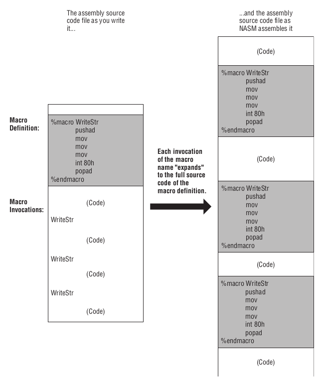
Figure 57: 宏定义以及展开
图中的 WriteStr 就是一个宏标签,以 %macro 指令开头,一直到 %endmacro 指令为止就是一个宏定义.
汇编的时候,汇编器会把所有遇到的 WriteStr 标签替换成它的定义,就像图中描述的那样.
这图是一个非常简单的例子,宏也可以像函数那样支持传递参数.
假设有个程序经常调用 sys_write 来打印字符串,可是每次调用都要传入4个参数,导致很繁琐,如果只需要传入输出的字符串和字符长度两个参数就好了.
这个时候宏可以解决这个问题,我们把上面的 WriteStr 改一下来完成这个任务.
SECTION .text GLOBAL _start %macro WriteStr 2 ; 2 means two arguments, %1 = String address; %2 = string length push rax push rbx mov eax, 4 mov ebx, 1 mov ecx, %1 ; Put string address into ECX mov edx, %2 ; PUt string length into EDX int 80H pop rbx pop rax %endmacro _start: WriteStr Msg, MsgLen mov eax, 1 mov ebx, 0 int 80H
在定义宏时,宏标签后面可以跟一个常量 N 表示这个宏接受 N 个参数.在宏定义里面要引用第 i 个参数,需要用到 %i 这样的符号.
WriteStr 的定义里面,把第一个参数传入到 ECX 上,第二个参数传入到 EDX 上.
如果传入的参数数量比定义的要少,那么在汇编时很有 可能 会报错,这取决于如何使用未定义的参数;'
如果传入的参数数量比定义的多,那么多余的参数就会被无视.
如果宏定义里面使用了其它的宏,那么在展开时,里面的宏也会被展开.
在汇编语言里面,标签(label)一定要是唯一的,准确来说是全局标签.
因为宏本质作用是在解决代码重复的问题,是注定要出现程序的任何地方,如果宏使用了全局标签,这会出现全局标签重复的问题.
可是如果宏不能使用标签的话,那么如何实现跳转呢?其实宏有自己的局部标签,这种局部标签不会出现标签重复问题,宏局部标签是以 "%%" 符号开头的.
有一个把 buffer 里面的字符串转化位大写的程序如下,
%macro UpCase 2 ; %1 = Address of buffer; %2 = Chars in buffer mov edx,%1 ; Place the offset of the buffer into edx mov ecx,%2 ; Place the number of bytes in the buffer into ecx %%IsLC: cmp byte [edx+ecx-1],’a’ ; Below 'a’? jb %%Bump ; Not lowercase. Skip cmp byte [edx+ecx-1],’z’ ; Above 'z’? ja %%Bump ; Not lowercase. Skip sub byte [edx+ecx-1],20h ; Force byte in buffer to uppercase %%Bump: dec ecx ; Decrement character count jnz %%IsLC ; If there are more chars in the buffer, repeat %endmacro
可以看到,里面是利用宏局部标签作为跳转目标的: %%IsLC 以及 %%Bump.
宏也可以像函数那样定义在库里面,这种库叫做宏库(macro libraries),一个宏库就是一个包含了源代码的文本而已.
函数库能够单独汇编成一个模块,引用这个模块只要连接起来就好.
可是宏库不一样,只要汇编的模块有引用宏库,那么在汇编时宏库就一定要被传入进去,如果有很多个这样的模块,那么严重影响汇编效率.
引用宏库需要使用 %INCLUDE 指令,比如行在有一个叫做 mylib.mac 的宏库,
%include "/path/to/mylib.mac"
引用时要确保路径正确,否则 NASM 不能定位到宏库文件然后产生错误,就类似这样,
xxx.asm:1: fatal: unable to open include file `mylib.mac'
宏的使用远远不止这样,具体可以看 NASM Macro.
调用C库的函数
把汇编语言创建的程序和 C 语言的函数连接起来时,得到的其实是一个混合程序了(hybrid).
为什么汇编和 C 语言两门不同的语言所编写的程序能够连接起来并且正常运行?
虽然开发程序时使用的语言不一样,但是得到的目标文件都是使用机器码,
由于都是在统一个架构统一个系统下进行汇编/编译的,那么彼此的目标文件都是使用了同一套规则的机器码,
也就是使用了同一门语言,在这个层面上是可以调用彼此的,这就是基本原因.
在 Linux 上基本上所有 C 程序都是用 GCC 编译得来的,包括 Linux 本身的大部分.
GCC 编译程序分为很多个步骤,每个步骤都由不同工具完成,可以说 GCC 是一个由多个工具集合而成的工具.
下面这图就是这些工具之间是怎么样的一个工作流程:

Figure 58: GCC编译C语言并生成程序
首先, GCC 会对 C 源代码(.c)进行预处理,所谓的预处理就是对于源代码里面的宏进行展开,得到一份展开了宏的新代码(.c),
完成这项工作的工具叫做 C preprocessor, 简称 CPP. C 的宏展开和 NASM 的宏展开很类似,除了语法外,概念上都是一样的.
然后, GCC 根据展开后的代码生成一份汇编源码(.s),这份汇编源码只能由一个叫做 GAS 的汇编器进行汇编;
之后, GAS 把这份汇编源码进行汇编得到一个模块文件(.o);
最后 ld 把模块文件连接得到一个可执行文件,当然 GCC 会给 ld 设置了某些参数,和我们之前连接方式是有点差别的.
GAS 支持的汇编语法是 AT&T,和使用 INTEL 语法的 NASM 是不一样的.
不过这不是问题,因为它们生成的模块文件都可以使用 ld 来进行连接.
假设有一份根据 NASM 语法编写的源代码叫做 callc.asm,使用了 Linux 标准 C 库 GLIBC 的函数,那么可以这么汇编和连接:
callc: callc.o gcc -no-pie .callc.o -o callc callc.o: callc.asm nasm -f elf64 -g -F stabs callc.asm
最后得到 callc 就是混合产物,这个产物的结构如下:
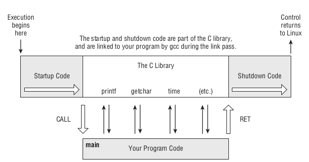
Figure 59: 混合程序的结构
Startup Code 和 Shutdown Code 都是 Glibc 的产物, Startup Code 里面使用了 CALL 指令调用模块 calcc.o 的 main 函数,
main 必须通过 RET 指令进行返回, CPU 继续执行 Shutdown Code,最后把控制全交还给 Linux.
然而,只保证了"彼此的目标文件使用同一门语言"还是无法保证可以它们在连接起来后能够正常运行.
在前面介绍函数时就提到过几乎所有高级语言的函数调用本质都是: 先备份好函数用到的寄存器,然后调用函数,在返回函数后还原寄存器.
不同语言在汇编层面上会有一些区别,也就是具体的调用规范(calling convention)会不太一样,比如某门语言的编译器在生成程序时,
规定只能用某几个寄存器来给函数传某一数据类型的参数,别的数据类型参数就用栈来传入,用另外某一个或者两个寄存器用来储存函数返回值等等.
调用规范规定了怎么定义 ABI,哪怕是不同的编程语言,只要它们的编译器在生成目标文件时遵守同一个调用规范,它们的目标文件都是可以相互调用的.
C 语言编译器 GCC 在 x86 上采用的是 System V ABI,这套 ABI 分 i386 和 x86-64 两个版本,前者就是32位平台,后者是64位平台.
i386的 ABI 如下:
- 调用前函数必须保留
EBX, ESP, EBP, ESI以及EDI这几个寄存器的值,在函数返回后必须还原回. - 函数的返回值要保存到
EAX上,如果返回值超过32位,那么返回值要存放到EDX和EAX上,EAX储存LSB方向的32位,高位的存放在EDX上. - 传给函数的参数要以逆序(reverse order)压进栈,比如
myFunc(foo, bar, bas)就是把bas, bar和foo三个参数依次压进栈. - 函数自身不把压进去的参数弹出,在函数返回后必须手动把这些参数弹出来,或者直接增加
ESP对应的偏移值(offset)来释放栈,后者更加常用更加快. C程序的起点标签是main(全小写)而不是_start.
i386 现在基本被淘汰了, x86-64 相比而言主要做了以下改变了:
- 调用函数前必须保留
rbx, rbp, rsp, r12, r13, r14和r15,函数结束后需要还原它们; 传递参数的方式改变了,对参数进行分类,不同类型使用不同方式传递,总得来说分标量(scalar)和矢量(vector)两大类,
比如属于标量的整型数类型的参数从左到右依次使用通用寄存器
rdi, rsi, rdx, rcx, r8以及r9传递参数,如果参数数量超过这几个寄存器的数量,那么就通过栈来传递多余的参数;内存类型数据使用栈来进行传递,等等,具体可以查看 System V x64 ABI 的 Parameter Passing;
使用
rax和rdx分别作为第一和第二返回寄存器,还有一些特殊类型的数据需要使用别的寄存器来进行返回.rax还有一个作用,C语言支持一种可变参数函数(variable arguments function, varargs function),这种函数的参数数量是不固定的,需要让rax记录传递的参数里面有多少个矢量参数.
总得来说, x86-64 相对 i386 的 ABI 规范的主要变化就这些,有一个点倒是没有这么改变的,那就是对栈的依赖.
编译器本质是一个生产汇编代码的机器(robots),这意味着编译器必须依靠暴力(brute-force)的手段来生成代码,而这些手段大部分都依靠栈的使用.
对于 C 程序来说,每次调用函数,函数都要被分配一块内存区域来作为它本次调用使用的栈,这块区域在在函数返回后被销毁,栈上的一个指向数据首字节的地址叫做一个栈帧(stack frame).
栈帧的作用是用来储存函数里面的局部变量,这在单纯使用汇编语言开发中是很少见的,如果是要从汇编程序中调用高级语言的函数,那么这一点必须要了解.
这里有一个问题就是: 如何给函数划分一块区域作为它的栈?
要确定一块内存区域只需要知道起始位置和结尾位置,所以需要两个通用寄存器来储存这两个信息,从而确定栈.
i386 的 ABI 规范规定用 EBP 来储存栈的起始位置, ESP 储存栈的结尾位置,每次往栈里面压进了数据, ESP 就会相应减少,指向下一个栈帧.

Figure 60: Stack in i386 ABI
在调用 C 函数时,需要手动为它建立栈,在函数结束后把栈销毁掉,具体汇编代码如下:
push ebp mov ebp, esp call cFunc mov esp, ebp pop ebp
可以看到栈指针 esp 是通过 ebp 来进行备份和还原的,之所以这么做是因为 esp 之后要被手动修改,这导致只靠 PUSH 和 POP 指令是无法在函数结束时正确还原 esp 的.
在 x86-64 的 ABI 规范中只需要把寄存器换成它们的拓展寄存器就好了: rbp 以及 rsp.
不过这里隐藏了一个细节: 在调用函数前,要确保栈指针在 CALL 指令执行后能够对齐 n 字节边界(n-byte boundary, nB boundary),
也就是栈指针的值满足 \(*sp\ \ rem\ \ n = 0\),这个 n 的规定取决于 ABI 方案的定义, x86-64 的规定是16.
来一个实际例子进行比对: 调用 Glibc 的 puts 函数.
在32位下,
SECTION .data EatMsg: db "Eat at Joe's!", 0 SECTION .bss SECTION .text extern puts global main main: push ebp mov ebp, esp push ebx push esi push edi push EatMsg call puts add esp, 4 pop edi pop esi pop ebx mov esp, ebp pop ebp ret
可以看到32位下调用 C 函数要用栈来传递所有参数,把 EatMsg 作为参数压进栈再调用 puts,最后通过手动增加栈指针的值来移动栈指针,使其指向栈里面的上一个栈帧,以次清空参数占用的内存.
在64位下,
SECTION .data EatMsg: db "Eat at Joe's!", 0 SECTION .bss SECTION .text extern puts global main main: push rbp mov rbp, rsp push rbx push r12 push r13 push r14 push r15 push rdi mov rdi, EatMsg call puts pop rdi pop r15 pop r14 pop r13 pop r12 pop rbx mov rsp, rbp pop rbp ret
可以注意到在调用 puts 之前一共使用了7次 PUSH 指令,也就是目前栈一共有了 \(7 \times 8\) 个字节的数据量, rsp 没有对齐到16字节边界,
但是, CALL 指令会把返回地址压进栈,这个时候栈就有 \(8 \times 8\) 个字节的数据量,这样 rsp 就对齐,也就是这个例子我们无需手动对齐.
如果这个例子里面多了或者少了一个 PUSH 操作,那么,我们只能再 PUSH 或者 POP 掉一个数据来进行对齐,又或者手动给 rsp 减去8(rsp 减去8意味栈增长8个字节).
SECTION .data EatMsg: db "Eat at Joe's!", 0 SECTION .bss SECTION .text extern puts global main main: push rax ; extra push instruction push rbp mov rbp, rsp push rbx push r12 push r13 push r14 push r15 push rdi sub rsp, 8 ; align to 16-byte boundary mov rdi, EatMsg call puts add rsp, 8 ; restore %rsp to pre-aligned value pop rdi pop r15 pop r14 pop r13 pop r12 pop rbx mov rsp, rbp pop rbp pop rax ret
其实有些系统是不强制要求对齐的,有时候 Linux 就不强制要求, MacOS 就要求.
这个例子其实有点过于规范了,因为调用 puts 并没有改变 r12 到 r15 4 个寄存器,所以它们的备份还原的指令是可以去掉的.
再来一个比较典型的调用 printf 的例子.
SECTION .data Format: db "The answer of %d + %d is %d, and don't you forget it!", 10, 0 SECTION .bss SECTION .text extern printf global main main: push rbp mov rbp, rsp push rbx push rdi push rsi push rdx push rcx mov rdi, Format ; first argument mov rsi, 3 ; second argument mov rdx, 2 ; third argument xor rcx, rcx add rcx, rsi add rcx, rdx ; rcx is the fourth argument xor rax, rax ; printf is a varargs function, there is no vector type in this example call printf pop rcx pop rdx pop rsi pop rdi pop rbx mov rsp, rbp pop rbp ret
这个相当于 C 语言里面的这样:
#include <stdio.h> int main() { printf("The answer of %d + %d is %d, and don't you forget it!\n", 3, 2, 5); return 0; }
在汇编版本上有一个细节:
在给 printf 传递参数前把 rax 清零了,这是因为 printf 是可变参数函数,给这种函数传递参数时需要把矢量参数的个数记录在 rax 上,
而这个例子里面没有一个矢量参数,所以才把 rax "清零".
如果把上面的例子改成如下,你就看不到 "清零" 这个动作了,
#include <stdio.h> int main() { printf("The answer of %d + %d is %.2f, and don't you forget it!\n", 3, 2, 5.0); return 0; }
这是因为 float 类型的 5.0 属于一个矢量参数,所以"清零"动作变成 mov rax, 1.
在 x86-64 ABI 规定下,用于传递标量参数的通用寄存器只有6个,一旦超过这个数量,额外的参数就需要通过栈来传递了,我们把上面调用 printf 的例子改一下看看,
SECTION .data Format: db "%d,%d,%d,%d,%d,%d", 10, 0 SECTION .bss SECTION .text extern printf global main main: push rbp mov rbp, rsp push rbx push rdi push rsi push rdx push rcx push r8 push r9 mov rdi, Format mov rsi, 1 mov rdx, 2 mov rcx, 3 mov r8, 4 mov r9, 5 sub rsp, 8 ; 10 PUSH before CALL, so align to 16-byte boundary push 7 push 6 call printf add rsp, 16 ; Stack cleanup for 2 parms add rsp, 8 pop r9 pop r8 pop rcx pop rdx pop rsi pop rdi pop rbx mov rsp, rbp pop rbp ret
这个相当于 C 语言里面的这样:
#include <stdio.h> int main() { printf("%d,%d,%d,%d,%d,%d,%d\n", 1, 2, 3, 4, 5, 6, 7); return 0; }
printf 一共接受了8个参数,有两个参数需要用栈来传递的: 6 和 7,而且用栈传递是要注意顺序,
在 C 语言里面可以看到数字6是第7个参数,数字7是第8个参数,然而在汇编里面则是先传7再传6.
其实这不难理解,因为栈是先进后出,对于函数来说,从栈里面拿的第一个参数必然是最后进去的那个.
还有这里还进行了参数对齐,这里需要注意绝对不能在 push 7 和 push 6 之后进行对齐的,这会影响参数的读取.
这些基本上就是 C 函数的调用规范了,那么可以反过来让 C 调用汇编的函数吗?
这个章节开篇就给出了答案:可以.
实践起来也不难,只需要按照调用规范定义就可以,这里把 函数 章节里的 Acc 改成可这样的一个函数来作为例子.
首先我们的 Makefile 是这样的,
main: acc.o main.c gcc -fPIC -o main main.c acc.o acc.o: acc.asm nasm -f elf64 -g -F stabs acc.asm
下面就是源代码了,其实都简单, acc.asm 是作为被调用的一方, main.c 作为调用的一方.
; acc.asm GLOBAL acc:function SECTION .data SECTION .bss SECTION .text acc: xor rax, rax .next cmp rdi, 0 jle .exit add rax, rdi dec rdi jmp .next .exit: ret
/* main.c */ #include <stdio.h> int acc(int); int main() { printf("The result is %d\n", acc(4)); return 0; }
最终运行程序 main 会打印出这样的结果: "The result is 10".
前面关于 C 函数调用规范都只是抛砖引玉,很有很多细节没有提及,也不可能全部讲到,关键还是得靠自己去学习.
最有效的学习方法就是阅读 GCC 生成的汇编码,不过 GAS 使用的汇编语法是 AT&T 语法,所以这里稍微终结一下 AT&T 语法于 INTEL 语法的差异,
一旦知道两者的差异, AT&T 语法就算上手了.
AT&T的助记符和寄存器名字全部要求小写, 而INTEL的是 建议 大写.- 寄存器名字要求前面有一个百分号"%",比如
INTEL的EAX在AT&T里面是%eax. - 每个支持操作数的机器指令,它们的助记符都会有一个字符后缀,用来表示操作数大小. 这些后缀分别是
b(yte), w(ord), l(ong)以及q(uad),比如INTEL的MOV BX, AX在AT&T里是movw %ax, %bx. AT&T的第一个操作数是源操作数,其次才是目的操作数,这和INTEL相反,前面的一点可以看出来.- 立即操作数要求前面有一个美元符号"$",比如
INTEL的PUSH 64在AT&T里面就是pushl $64. - 内存引用以及有效地址计算的语法不一样,在
INTEL里是这样的 \(\left[base + (index \times scale) + disp\right]\),在AT&T则是 \(\pm disp(base, index, scale)\) - 注释符号是
#.
假设现在要看 main.c 的汇编码,那么可以这样:
gcc -S main.c -o main.asm
这里把 -o 选项设定成输出的汇编码文件名位 main.asm,如果不指定,默认就是 main.s.
.file "main.c" .text .section .rodata .LC0: .string "The result is %d\n" .text .globl main .type main, @function main: .LFB0: .cfi_startproc pushq %rbp .cfi_def_cfa_offset 16 .cfi_offset 6, -16 movq %rsp, %rbp .cfi_def_cfa_register 6 movl $4, %edi call acc@PLT movl %eax, %esi leaq .LC0(%rip), %rdi movl $0, %eax call printf@PLT movl $0, %eax popq %rbp .cfi_def_cfa 7, 8 ret .cfi_endproc .LFE0: .size main, .-main .ident "GCC: (Ubuntu 7.5.0-3ubuntu1~18.04) 7.5.0" .section .note.GNU-stack,"",@progbits
正如你所见, GAS 的语法比起 NASM 的复杂得多,除了前面提到的差异比较传见以外,
GAS 的标签也值得提一下,首先 GAS 的标签也是一个字符串后面紧跟冒号(:),只是一些特定的目标文件格式要求冒号是必须有的, ELF 就属于这种;
.L 开头的标签就是局部标签,但这并不是唯一一种定义局部标签的方式,不同的目标文件格式要求的不一样, ELF 的就是以 .L 开头.
此外还能看见和 ELF 局部标签长的很像的东西,比如 .file, .cfi_def_cfa 等等,它们后面没有跟着冒号,所以并不是局部标签,而是指令(directives).
这里的 .cfi_* 指令叫做 CFI 指令,全称 call frame information,用于提供调试信息,它们不会产生机器码,跳过它们也没有问题.
可以发现,有些标签定义了但没有用上: .LC0, .LFB0 以及 .LFE0, 这是正常的,毕竟 GCC 只是一个生成汇编码的工具,不像人那么智能.
甚至有时候还能发现一些多余的指令,这些都是可以进行优化的.
日后可能会遇到一些更加复杂的程序,很可能会又更多关于 GAS 的东西是上面没讲过的,所以常备一份GAS的文档是非常有必要的.
阅读GCC产生的汇编码
即便你知道了 GAS 的一些用法,也知道了 C 的调用规范,在第一次见到 GCC 实际产生的汇编码你可能会不适应.
C 语言有很多概念是汇编里面没有的,那么这些没有的东西在汇编里面是如何的呢?这是研究 GCC 产生汇编码的一个思路方向.
这个章节会给出一个不算太复杂的例子,来分享一下我个人阅读 GCC 汇编码的一些心得.
首先给出 C 程序的源代码,
#include <stdio.h> #include <sqlite3.h> static int callback(void* data, int count, char** row, char** col) { fprintf(stderr, "%s", (const char*)data); for (int i = 0; i < count; i++) { printf("Field.%d: %s = %s\n", i+1, col[i], row[i] ? row[i]: "NULL"); } printf("\n"); return 0; } int main(int argc, char* argsv[]) { sqlite3 *db; char *errmsg = 0; int rc; rc = sqlite3_open("Example.db", &db); if (rc) { fprintf(stderr, "Can't open database: %s\n", sqlite3_errmsg(db)); return 1; } fprintf(stderr, "Opened database successfully\n"); char *select_sql = "select * from ANIMATION;"; const char* data = "Callback function called:\n"; rc = sqlite3_exec(db, select_sql, callback, (void*)data, &errmsg); if (rc != SQLITE_OK) { fprintf(stderr, "SQL error: %s\n", errmsg); sqlite3_free(errmsg); } else { fprintf(stdout, "Operation done successfully\n"); } sqlite3_close(db); return 0; }
我们所获得到的汇编码是这样的,
.file "exampledb.c" .text .section .rodata .LC0: .string "NULL" .LC1: .string "Field.%d: %s = %s\n" .text .type callback, @function callback: .LFB0: .cfi_startproc pushq %rbp .cfi_def_cfa_offset 16 .cfi_offset 6, -16 movq %rsp, %rbp .cfi_def_cfa_register 6 subq $48, %rsp movq %rdi, -24(%rbp) movl %esi, -28(%rbp) movq %rdx, -40(%rbp) movq %rcx, -48(%rbp) movq stderr(%rip), %rdx movq -24(%rbp), %rax movq %rdx, %rsi movq %rax, %rdi call fputs@PLT movl $0, -4(%rbp) jmp .L2 .L5: movl -4(%rbp), %eax cltq leaq 0(,%rax,8), %rdx movq -40(%rbp), %rax addq %rdx, %rax movq (%rax), %rax testq %rax, %rax je .L3 movl -4(%rbp), %eax cltq leaq 0(,%rax,8), %rdx movq -40(%rbp), %rax addq %rdx, %rax movq (%rax), %rax jmp .L4 .L3: leaq .LC0(%rip), %rax .L4: movl -4(%rbp), %edx movslq %edx, %rdx leaq 0(,%rdx,8), %rcx movq -48(%rbp), %rdx addq %rcx, %rdx movq (%rdx), %rdx movl -4(%rbp), %ecx leal 1(%rcx), %esi movq %rax, %rcx leaq .LC1(%rip), %rdi movl $0, %eax call printf@PLT addl $1, -4(%rbp) .L2: movl -4(%rbp), %eax cmpl -28(%rbp), %eax jl .L5 movl $10, %edi call putchar@PLT movl $0, %eax leave .cfi_def_cfa 7, 8 ret .cfi_endproc .LFE0: .size callback, .-callback .section .rodata .LC2: .string "Example.db" .LC3: .string "Can't open database: %s\n" .LC4: .string "Opened database successfully\n" .LC5: .string "select * from ANIMATION;" .LC6: .string "Callback function called:\n" .LC7: .string "SQL error: %s\n" .LC8: .string "Operation done successfully\n" .text .globl main .type main, @function main: .LFB1: .cfi_startproc pushq %rbp .cfi_def_cfa_offset 16 .cfi_offset 6, -16 movq %rsp, %rbp .cfi_def_cfa_register 6 subq $64, %rsp movl %edi, -52(%rbp) movq %rsi, -64(%rbp) movq %fs:40, %rax movq %rax, -8(%rbp) xorl %eax, %eax movq $0, -32(%rbp) leaq -40(%rbp), %rax movq %rax, %rsi leaq .LC2(%rip), %rdi call sqlite3_open@PLT movl %eax, -44(%rbp) cmpl $0, -44(%rbp) je .L8 movq -40(%rbp), %rax movq %rax, %rdi call sqlite3_errmsg@PLT movq %rax, %rdx movq stderr(%rip), %rax leaq .LC3(%rip), %rsi movq %rax, %rdi movl $0, %eax call fprintf@PLT movl $1, %eax jmp .L12 .L8: movq stderr(%rip), %rax movq %rax, %rcx movl $29, %edx movl $1, %esi leaq .LC4(%rip), %rdi call fwrite@PLT leaq .LC5(%rip), %rax movq %rax, -24(%rbp) leaq .LC6(%rip), %rax movq %rax, -16(%rbp) movq -40(%rbp), %rax leaq -32(%rbp), %rcx movq -16(%rbp), %rdx movq -24(%rbp), %rsi movq %rcx, %r8 movq %rdx, %rcx leaq callback(%rip), %rdx movq %rax, %rdi call sqlite3_exec@PLT movl %eax, -44(%rbp) cmpl $0, -44(%rbp) je .L10 movq -32(%rbp), %rdx movq stderr(%rip), %rax leaq .LC7(%rip), %rsi movq %rax, %rdi movl $0, %eax call fprintf@PLT movq -32(%rbp), %rax movq %rax, %rdi call sqlite3_free@PLT jmp .L11 .L10: movq stdout(%rip), %rax movq %rax, %rcx movl $28, %edx movl $1, %esi leaq .LC8(%rip), %rdi call fwrite@PLT .L11: movq -40(%rbp), %rax movq %rax, %rdi call sqlite3_close@PLT movl $0, %eax .L12: movq -8(%rbp), %rcx xorq %fs:40, %rcx je .L13 call __stack_chk_fail@PLT .L13: leave .cfi_def_cfa 7, 8 ret .cfi_endproc .LFE1: .size main, .-main .ident "GCC: (Ubuntu 7.5.0-3ubuntu1~18.04) 7.5.0" .section .note.GNU-stack,"",@progbits
看上去汇编码很长,但不要害怕,只要知道"GCC怎么把C语言的某个东西生成什么的指令",那么再长的汇编码你也能读得懂.
C 语言比起很多其它的高级语言要简单很多,"简单"是指它的东西不多,并非指它容易学习掌握.
即便这样也不可能用有限的篇幅把所有东西讲完,因此我会讲最常用的两样东西: 变量(variables)和函数.
阅读程序的源代码通常都是从入口出发,入口通常是初始化数据,为要调用的函数准备参数,再调用别处定义好的函数.
事实上,这是大部分函数都在干的事情,不是在准备参数的路上,就是在调用函数.
C 程序的入口 main 就是一个函数,我们会通过这个个体来学习 C 函数在汇编里面是如何的.
main 接受两个参数: argc 以及 argsv,类型分别是 int 以及 char* [].
它第一步就是先建立栈,再把参数保存在栈里面, GCC 会计算出函数在运行时需要 n 个字节的栈空间,然后把栈指针 rsp 指向到 \(rbp - n\) 上.
栈的大小 主要 取决于函数 使用了 多少个局部变量(,数的参数也属于变量).
例子中的 main 就需要 64 个字节的栈空间,因此 main 在建立栈后就有一条指令: subq $64, %rsp.
之后在栈上进行数据读写都不会通过修改 rsp 来完成, GCC 会给变量在栈上计算并分配好地址,读写数据就是通过这个地址来完成.
然而并非所有函数都有 subq $N, %rsp 这样的指令来分配栈空间,就比如上一个小节的 main.asm 就没有,那么什么时候有这个指令呢?
x86-64 ABI 规范有一个 red zone 的概念,它是指 %rsp 以下的128字节大小空间, 并且 约定 信号(signal)或者软中断是不能修改这块区域的,而局部变量实际上就是储存在这片区域内,
一个函数可以使用完这128个字节,也可以只用一部分,具体由编译器决定.这个这个小节的 main.asm 则只是用了64个字节,
上个小节的 main.asm 没有任何 subq $N, %rsp 的指令,这意味着用完128个字节,也就是最多只能访问到 -128(%rsp) 这个位置上.
还有一种可能: 在使用 GCC 编译时关闭了生成 red zone 的选项,通常只有在进行内核级开发才这么做,这意味这没有限制.
在了解完 GCC 如何建立栈后,可以看以下参数是如何被储存到栈上的了.
根据 x86-64 ABI 的规定可以知道,第一和第二个参数的值分别在 rdi 和 rsi 上,而在上面看到的第一个参数则是保存了在 edi 上,这是因为 int 数据的大小只占4个字节.
因为 rsp 是固定指向 \(rbp - n\), 所以保存数据时没使用 PUSH 指令,而是直接使用 mov* 指令把数据复制到算好的内存地址上,读取数据时反过来从计算好的内存地址上获取数据.
不通过修改 rsp 在栈上读写数据的好处就是读写效率极高,前提是要保证有效地址计算正确, GCC 作一个有历史的编译器完全没有这个问题的.
可以看到例子中 main 的第一个参数和第二个参数的值分别被保存到 -52(%rbp) 和 -64(%rbp) 上了.
不过这里有一个奇怪的地方: 第一个参数的数据只有4个字节,第二个参数的数据大小可以从 rsi 看出只要8个字节,那么为什么两个数据之前的距离有12个字节?
其实就是之前讲过的对齐16字节边界,这里面有4字节空间是空出来的.
在处理好参数后有这样的指令,
movq %fs:40, %rax movq %rax, -8(%rbp)
要理解它们要先理解一个概念: stack canary, 这个例子里面的 %fs:40 的值就是作为 stack canary, 每个程序的 stack canary 是不一样的.
在前面就提过,从保护模式开始段寄存器就被操作系统接管了,也就是这个值也是由操作系统生成的.实际上 stack cannary 的生成方式各不相同的, GCC 这样采用操作系统生成的值只是其中一种方式而已.
stack canary 它被用来进行栈保护检查(stack-guard check),避免程序因 buffer overflow 受到攻击.
这一段的作用是把 stack canary 储存到栈的底部: -8(%rbp) 上,在 main 函数的后面有这么一段,
.L12: movq -8(%rbp), %rcx xorq %fs:40, %rcx je .L13 call __stack_chk_fail@PLT .L13: leave .cfi_def_cfa 7, 8 ret .cfi_endproc
这段就是进行栈保护检查,这里是使用 xorq %fs:40, %rcx 来判断 %fs:40 是否和 %rcx 一样,一样就证明没有问题,否则表明受到恶意程序的攻击.
GCC 也支持在编译时选择不进行栈保护检测,就算启用了也不一定是所有函数都要进行检测,比如这个例子里的 callback 函数,这方面可以看看这个链接里面关于安全的小节: CS 105: Computer Systems.
在高级语言里面,变量的名字是非常重要的,读写数据都要依靠它们来完成,然而在汇编层面上完全看不到一个变量的名字,取而带之的是一个有效地址,因此我们不能在汇编码上找得到 argc 和 argsv 这两个参数名.
在阅读高级语言的源代码时,如果代码里面的一些命名不规范,这都是十分影响开发人员阅读的,难以理解这个变量或者函数的目的是什么.
汇编语言则是有过之而无不及,函数名字还是保留着, 局部变量名 直接没了.因此阅读汇编码是 很难 一眼看出哪个有效地址对应 C 源码里的哪个变量,要找出对应关系就只能通过上下文推导.
就拿 main 里面的 db 这个局部变量来说,想找到它对应哪个有效地址,可以通过找到接受它作为参数的函数,可以看到有 sqlite3_open 和 sqlite3_exec 这两个函数调用了它,
选择其中一个,比如 C 源码里 sqlite3_open 的第二个参数就是 &db,也就是 db 的地址,也就是说只要在 call sqlite3_open@PLL 前找到最近的一条设置 rsi 寄存器值的指令,就能够找到变量 db 的有效地址.
因此可以定位到这个地方
leaq -40(%rbp), %rax movq %rax, %rsi leaq .LC2(%rip), %rdi call sqlite3_open@PLT
,可以知道 db 对应的地址就是 -40(%rbp).
当然了,函数里面并非一定要调用其它函数,这个时候就不能通过这种方法来找出关系了,不过主体思路都是差不多的,
根据上下文来推导出变量,通过变量推导出正在做的事情.
只要这个变量在某个地方被使用了,那么就一定有办法可以找到它的有效地址;而对于没有被使用过的变量, GCC 是不会为它们分配栈空间的.
以上就是阅读 GCC 汇编码的基本思路,还有很多东西没有提到,比如 GCC 会把 C 的结构体, switch 语句, if 语句等等编译成什么样,这只能靠自己去学习了.
最后说一下个人观点, 学习汇编就应该作为学习 C 语言的基础,而在学习 C 时需要时刻想着"写的东西会编译成什么样".
之所以这么认为,是因为很多教学都只着重教语法,栈,内存分配等等这些概念虽然有讲,但这些概念是十分难表述清楚的,不见过"实物"很难理解.
就内存分配来说,很多人都不知道什么时候需要使用 malloc 分配内存,分配多少,什么时候使用 free 进行销毁.
一旦知道局部变量是储存在栈上的,想要把局部变量的数据在函数结束也能访问到,那么这个时候就需要分配内存把数据储存起来,在不需要这个数据的时候销毁分配好的内存.
所以汇编作为 C 的基础完全没有问题.
机器码和字节码
通过汇编层面去了解一个程序是十分有趣的一件事情,可以了解到程序的什么地方可以优化,
但是有些另类的程序并不像 C 程序那样由机器码组成,想要给它们优化就得了解一个概念: 字节码(bytecode).
和机器码一样,字节码本质上也是二进制位序列,两者差别在于字节码并非直接由 CPU 来解析执行.
由一种叫做虚拟机(virtual machine, VM)的程序解析执行,因为它能够像 CPU 一样可以根据二进制位序列来做出对应行为.
这就是"另类的程序"能够运行的真相: 依靠虚拟机来运行.
虚拟机也有指令和助记符这些概念,类似于同架构的 CPU 所支持的指令不一样,不同的虚拟机所支持的指令也是不一样的.
如果一个虚拟机所支持的指令和 CPU 所支持的指令一样,并且该虚拟机的解释行为就和 CPU 的一样,那么这个虚拟机就是模拟了一台物理机器,可以在这个虚拟机上面运行一个操作系统.
这种模拟物理机器的的虚拟机叫做系统虚拟机(system virtual machine),常见的有 VMware, VirtualBox.
此外,一些编程语言的实现也会采用虚拟机,就像 GCC 编译器会先把 C 语言编写的源代码编译成汇编码,再汇编成机器码一样,
这些编程语言的实现会把源代码编译成字节码,然后由对应虚拟机解释执行,这种虚拟机叫做进程虚拟机(process virtual machine),
常见的编程语言 Java, Python, JavaScript 等等就有虚拟机,有些甚至支持把字节码再编译成字节码.
虚拟机的实现方法主要有两种: 基于栈进行计算的堆栈机(stack machine),以及基于寄存器进行计算的寄存器机(register machine);这也是两种计算模型.
我们学习的 x86 CPU 就是寄存器机,你可能会说,"不对,我们前面不是还有学过栈的相关指令吗,为什么 x86 CPU 会是寄存器机?"
这是因为 x86 CPU 的栈主要是用来临时储存数据的,主体计算工作依然是由寄存器来完成,所以才说 x86 CPU 是寄存器机.
而反过来,堆栈机也是一样,可能会有少量寄存器来做储存,用栈完成计算工作.
现实中, CPU 也可以采用堆栈机设计,不过很少这么做,常规 CPU 都是寄存器机设计.
如果虚拟机和 CPU 的计算模型一样,那么该虚拟机的字节码更加容易编译成该 CPU 的机器码.
为了更加直观清楚两者的差别,可以看一下在两种不同计算模型下,进行 \(2 + 3\) 的计算是什么样的一个过程,
堆栈机:
PUSH 2 // 把立即数 2 压进栈 PUSH 3 // 把立即数 3 压进栈 ADD // 让两个栈入口的两个元素弹出,对它们进行相加: 2 + 3 = 5 ,再把结果 5 压进栈
寄存器机:
LOAD R1, 2 // 把立即数 2 加载进寄存器 1 中 LOAD R2, 3 // 把立即数 2 加载进寄存器 2 中 ADD R1, R2 // 把寄存器 R1 和 R2 上的两个数据进行相加: 2 + 3 = 5 ,再把结果 5 储存进寄存器 R1 上
常见的编程语言实现中, V8(JavaScript) 的虚拟机就是寄存器机, 官方 Python 的虚拟机就是堆栈机.
一旦你知道虚拟机是采用哪种实现,你就可以知道如何阅读它们的字节码了,当然你还要有它们的字节码说明.
之后的路
这篇笔记的例子的实际例子不多,因此我找了篇个不错的文章来当做补充:
这两个都包含了不少汇编和 C 互调的例子;为什么后面一直强调 C 语言的学习呢?
第一, C 语言比汇编更合适做跨平台的开发,跨平台的细节会由编译器会自动处理好.
第二, 基本上一眼就能从 C 语言就能看出编译器会生成什么汇编码,也就是说 C 语言和汇编十分接近,
当然前提就是开发人员需要懂得汇编,以及所使用的编译器是如何生成汇编码的.
因此, C 语言被称为"可移植汇编语言",比起汇编语言来说更加实用.